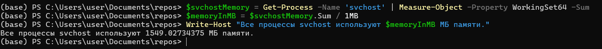

❗ Important: I am writing about PS7 (PowerShell 7). It differs from PS5 (PowerShell 5). Starting from the seventh version, PowerShell became cross-platform. Due to this, the behavior of some commands has changed.
In the first part, we established a key principle: PowerShell works with objects, not text. This post is dedicated to some important PowerShell tools: we will learn how to pass objects through the pipeline, analyze them using Get-Member, save results in variables, and automate all of this in script files (.ps1) with exporting results into convenient formats.
|)?The pipeline in PowerShell is a mechanism for passing full-fledged .NET objects (not just text) from one command to another, where each subsequent cmdlet receives structured objects with all their properties and methods.
The | (vertical bar) symbol is the pipeline operator. Its task is to take the result (output) of the command to its left and pass it as input to the command to its right.
Command 1 (creates objects) → | → Command 2 (receives and processes objects) → | → Command 3 (receives processed objects) → | ...
In bash, a byte stream, which is usually interpreted as text, is passed through the pipeline.
# Find all 'nginx' processes and count them
ps -ef | grep 'nginx' | wc -l
Here, ps outputs text, grep filters that text, and wc counts lines. Each utility knows nothing about "processes"; it only works with strings.
Example: Let's get all processes, sort them by CPU usage, and select the 5 most "resource-intensive" ones.
Get-Process | Sort-Object -Property CPU -Descending | Select-Object -First 5
Here, Get-Process creates process objects. Sort-Object receives these objects and sorts them by the CPU property. Select-Object receives the sorted objects and selects the first 5.
You've probably noticed words in the command starting with a hyphen (-): -Property, -Descending, -First. These are parameters.
Parameters are settings, switches, and instructions for a cmdlet. They allow you to control HOW a command performs its work. Without parameters, a command operates in its default mode; with parameters, you provide it with specific instructions.
Main parameter types:
-Property CPU: We tell Sort-Object which property to sort by. CPU is the parameter value.-First 5: We tell Select-Object how many objects to select. 5 is the parameter value.-Descending: This flag tells Sort-Object to change the sort order to descending (from largest to smallest). It doesn't need an additional value — it's an instruction in itself.Get-Process -Name 'svchost' | Measure-Object
This command answers a very simple question: "How many processes named svchost.exe are currently running on my system?"
Get-Process -Name 'svchost'This part of the command queries the operating system and asks to find all running processes whose executable file name is svchost.exe. Unlike processes like notepad (of which there are usually one or two), there are always many svchost processes in the system. The command will return an array (collection) of objects, where each object is a separate, full-fledged svchost process with its unique ID, memory usage, etc. PowerShell found, for example, 90 svchost processes in the system and now holds a collection of 90 objects.
| (Pipeline Operator)This symbol takes the collection of 90 svchost objects obtained in the first step and begins to pass them one by one as input to the next command.
Measure-ObjectSince we called Measure-Object without parameters (such as -Property, -Sum, etc.), it performs its default operation — simply counting the number of "items" passed to it. One, two, three... After all objects are counted, Measure-Object creates its own result object, which has a Count property equal to the final number.
Count: 90 — this is the answer to our question. 90 svchost processes are running. The other fields are empty because we did not ask Measure-Object to perform more complex calculations.
svchost and ParametersLet's change our task. Now we don't just want to count svchost processes, but to find out how much total RAM (in megabytes) they consume together.
For this, we will need parameters:
-Property WorkingSet64: This instruction tells Measure-Object: "From each svchost object that comes to you, take the numerical value from the WorkingSet64 property (this is memory usage in bytes)".-Sum: This flag instruction says: "Sum all these values you took from the WorkingSet64 property".Our new command will look like this:
Get-Process -Name 'svchost' | Measure-Object -Property WorkingSet64 -Sum
Get-Process will find the number of svchost objects.| will pass them to Measure-Object.Measure-Object works differently:
svchost object, looks at its .WorkingSet64 property (e.g., 25000000 bytes), and remembers this number..WorkingSet64 (e.g., 15000000 bytes), and adds it to the previous one.Measure-Object will create a result object, but it will be different this time.Count: 92: Number of objects.Sum: 1661890560: This is the total sum of all WorkingSet64 values in bytes.Property: WorkingSet64: This field is now also filled, informing us exactly which property was used for the calculations.$_)A variable is a named storage location in memory that holds a value. This value can be anything: text, a number, a date, or, most importantly for PowerShell, an entire object or even a collection of objects. A variable name in PowerShell always starts with a dollar sign ($). Examples: $name, $counter, $processList.
Special variable $_?
$_ is shorthand for "current object" or "this thing." Imagine a conveyor belt in a factory. Various parts (objects) travel along it. $_ is that very part that is currently in front of you (or in front of the processing robot). The source (Get-Process) — spills a whole box of parts (all processes) onto the conveyor. The conveyor (|) — makes these parts move along the belt one by one. The processor (Where-Object or ForEach-Object) — is a robot that looks at each part. The variable $_ — is that very part that is currently in the robot's "hands." When the robot finishes with one part, the conveyor feeds it the next, and $_ will now point to it.
Let's calculate how much total memory svchost processes use and display the result on the monitor.
# 1. Execute the command and save its complex result object into the $svchostMemory variable
$svchostMemory = Get-Process -Name svchost | Measure-Object -Property WorkingSet64 -Sum
# 2. Now we can work with the saved object. We extract its Sum property
$memoryInMB = $svchostMemory.Sum / 1MB
# 3. Display the result on the screen using the new variable
Write-Host "All svchost processes use $memoryInMB MB of memory."

Write-Host — is a specialized cmdlet whose sole task is to display text directly to the user in the console."..." - a text string that we pass to the Write-Host cmdlet as an argument. Why double quotes and not single quotes? In PowerShell, there are two types of quotes:
'...'): Create a literal string. Everything inside them is treated as plain text, without exceptions."..."): Create an expandable (or substitutable) string. PowerShell "scans" such a string for variables (starting with $) and substitutes their values in their place.$memoryInMB. This is a variable into which we, in the previous step of our script, put the result of calculations. When Write-Host receives a string in double quotes, a process called "String Expansion" occurs:
"All svchost processes use ".$memoryInMB construct. It understands that this is not just text, but a variable.$memoryInMB (e.g., 1585.52)." MB of memory.".Write-Host: "All svchost processes use 1585.52 MB of memory.".Launch Notepad:
$notepadProcess variable$notepadProcess = Get-Process -Name notepad
Write-Host "ID of 'Notepad' process is: $($notepadProcess.Id)"
❗ Important: Write-Host "breaks" the pipeline. Text output by it cannot be passed further down the pipeline for processing. It is intended only for display.
We know that objects "flow" through the pipeline. But how do we know what they consist of? What properties do they have, and what actions (methods) can be performed with them?
The cmdlet Get-Member (alias: gm) is the main tool for investigation. Before working with an object, pass it through Get-Member to see all its capabilities.
Let's analyze the objects that Get-Process creates:
Get-Process | Get-Member
*Let's break down each part of the Get-Member output.*
TypeName: System.Diagnostics.Process - This is the full, official "type name" of the object from the .NET library. It's its "passport." This line tells you that all objects returned by Get-Process are of type System.Diagnostics.Process. This ensures that they all have the same set of properties and methods. You can Google "System.Diagnostics.Process" to find official Microsoft documentation with even more detailed information.
- Column 1: Name
This is the simple, human-readable name of a property, method, or other "member" of an object. This is the name you will use in your code to access data or perform actions.
- Column 2: MemberType (Object Type)
This is the most important column for understanding. It classifies what each object is. This is its "role," which tells you HOW to use it.
Property (Property): A characteristic or piece of data stored inside the object. You can "read" its value.
BasePriority, HandleCount, ExitCode. These are simply data that can be viewed.Method (Method): An ACTION that can be performed with the object. Methods are always called with parentheses ().
Kill, Refresh, WaitForExit. You would write $process.Kill() or $process.Refresh().AliasProperty (Property Alias): A friendly alias for another, longer property. PowerShell adds them for convenience and brevity.
WS — is a short alias for WorkingSet64. Name — for ProcessName. VM — for VirtualMemorySize64.Event (Event): A NOTIFICATION that something has occurred, which you can "subscribe" to.
Exited. Your script can "listen" to this event to perform an action immediately after the process exits.CodeProperty and NoteProperty: special types of properties, often added by PowerShell itself for convenience. CodeProperty computes its value "on the fly," while NoteProperty is a simple note-property added to an object.- Column 3: Definition
This is the technical definition or "signature" of the member. It gives you precise details for its use. Its content depends on the MemberType:
AliasProperty: Shows what the alias equals. This is incredibly useful!
WS = WorkingSet64. You immediately see that WS is simply a shorthand for WorkingSet64.Property: Shows the data type stored in the property (e.g., int for an integer, string for text, datetime for date and time), and what can be done with it ({get;} — read only, {get;set;} — read and modify).
int BasePriority {get;}. This is an integer property that can only be read.Method: Shows what the method returns (e.g., void — nothing, bool — true/false) and what parameters (input data) it accepts in parentheses.
void Kill(). This means the Kill method returns nothing and can be called without parameters. There is also a second version, void Kill(bool entireProcessTree), which takes a boolean value (true/false).| Column | What is it? | Example from screenshot | For what purpose? |
|---|---|---|---|
| Name | The name you use in code. | Kill, WS, Name |
to access a property or method ($process.WS, $process.Kill()). |
| MemberType | Member type (data, action, etc.). | Method, Property, AliasProperty |
how to use it (read value or call with ()). |
| Definition | Technical details. | WS = WorkingSet64, void Kill() |
what is hidden behind the alias and what parameters a method needs. |
"I've opened many Notepad windows. How do I programmatically minimize all but the main one, and then close only the one that has 'Untitled' in its title?"
Get-Member:We need to find properties related to the window and its title.
Get-Process -Name notepad | Get-Member
Analysis of Get-Member result:
MainWindowTitle. Type string. Excellent, this is the title of the main window!CloseMainWindow(). This is a "softer" way to close a window than Kill().WaitForInputIdle(). Sounds interesting, perhaps this will help wait for the process to be ready for interaction.Get-Member showed us the MainWindowTitle property, which is key to solving the task and allows interaction with processes based on their window state, rather than just by name.
Now we can build logic based on the window title.
# 1. Find all Notepad processes
$notepads = Get-Process -Name notepad
# 2. Iterate through each and check the title
foreach ($pad in $notepads) {
# For each process ($pad), check its MainWindowTitle property
if ($pad.MainWindowTitle -like '*Untitled*') {
Write-Host "Unsaved Notepad found (ID: $($pad.Id)). Closing its window..."
# $pad.CloseMainWindow() # Uncomment to actually close
Write-Host "Window '$($pad.MainWindowTitle)' would have been closed." -ForegroundColor Yellow
} else {
Write-Host "Skipping Notepad with title: $($pad.MainWindowTitle)"
}
}
"Sometimes I see many child chrome.exe processes in the system. How do I find out which one is the main, 'parent' process that launched all of them?"
Get-Member:We need to find something that links one process to another.
Get-Process -Name chrome | Select-Object -First 1 | Get-Member
Analysis of Get-Member result:
CodeProperty type property named Parent.Definition) is System.Diagnostics.Process Parent{get=GetParentProcess;}. This is a calculated property that, when accessed, returns the parent process object.Now we can write a script that will output information about each chrome process and its parent.
# 1. Get all chrome processes
$chromeProcesses = Get-Process -Name chrome
# 2. For each of them, output information about it and its parent
$chromeProcesses | Select-Object -First 5 | ForEach-Object {
# Get the parent process
$parent = $_.Parent
# Formulate nice output
Write-Host "Process:" -ForegroundColor Green
Write-Host " - Name: $($_.ProcessName), ID: $($_.Id)"
Write-Host "Its parent:" -ForegroundColor Yellow
Write-Host " - Name: $($parent.ProcessName), ID: $($parent.Id)"
Write-Host "-----------------------------"
}
We immediately see that processes with IDs 4756, 7936, 8268, and 9752 were launched by process ID 14908. An interesting case can also be noted with process ID: 7252, whose parent process was not defined (perhaps the parent had already terminated by the time of the check). Modifying the script with an if ($parent) check elegantly handles this case without causing an error. Get-Member helped us discover the "hidden" Parent property, which provides powerful capabilities for analyzing process hierarchy.
When your command chain becomes useful, you'll want to save it for repeated use. This is what scripts are for — text files with the .ps1 extension.
By default, Windows prohibits running local scripts. To fix this for the current user, run the following once in PowerShell as an administrator:
Set-ExecutionPolicy RemoteSigned -Scope CurrentUser
This is a safe setting that allows you to run your own scripts and scripts signed by a trusted publisher.
system_monitor.ps1Create a file with this name and paste the code below into it. This script collects system information and generates reports.
# system_monitor.ps1
#requires -Version 5.1
<#
.SYNOPSIS
Script for creating a system status report.
.DESCRIPTION
Collects information about processes, services, and disk space and generates reports.
.PARAMETER OutputPath
Path to save reports. Defaults to 'C:\Temp'.
.EXAMPLE
.\system_monitor.ps1 -OutputPath "C:\Reports"
#>
param(
[Parameter(Mandatory=$false)]
[string]$OutputPath = "C:\Temp"
)
# --- Block 1: Preparation ---
Write-Host "Preparing to create report..." -ForegroundColor Cyan
if (!(Test-Path $OutputPath)) {
New-Item -ItemType Directory -Path $OutputPath -Force | Out-Null
}
# --- Block 2: Data Collection ---
Write-Host "Collecting information..." -ForegroundColor Green
$processes = Get-Process | Sort-Object CPU -Descending
$services = Get-Service | Group-Object Status | Select-Object Name, Count
# --- Block 3: Call function for export (see next section) ---
Export-Results -Processes $processes -Services $services -OutputPath $OutputPath
Write-Host "Reports successfully saved to folder $OutputPath" -ForegroundColor Magenta
Note: The Export-Results function will be defined in the next section as an example of good practice.
Clean data is good, but often it needs to be presented in a format convenient for humans or other programs. PowerShell offers many cmdlets for exporting.
| Method | Command | Description |
|---|---|---|
| Plain Text | ... | Out-File C:\Temp\data.txt |
Redirects text representation to a file. |
| CSV (for Excel) | ... | Export-Csv C:\Temp\data.csv -NoTypeInfo |
Exports objects to CSV. -NoTypeInfo removes the header type information. |
| HTML Report | ... | ConvertTo-Html -Title "Report" |
Creates HTML code from objects. |
| JSON (for API, web) | ... | ConvertTo-Json |
Converts objects to JSON format. |
| XML (native PowerShell format) | ... | Export-Clixml C:\Temp\data.xml |
Saves objects with all data types. They can be perfectly restored via Import-Clixml. |
Let's add an export function to our system_monitor.ps1 script. Place this code before the Export-Results call.
function Export-Results {
param(
$Processes,
$Services,
$OutputPath
)
$timestamp = Get-Date -Format "yyyy-MM-dd_HH-mm"
# Export to CSV
$Processes | Select-Object -First 20 | Export-Csv (Join-Path $OutputPath "processes_$timestamp.csv") -NoTypeInformation
$Services | Export-Csv (Join-Path $OutputPath "services_$timestamp.csv") -NoTypeInformation
# Create a nice HTML report
$htmlReportPath = Join-Path $OutputPath "report_$timestamp.html"
$processesHtml = $Processes | Select-Object -First 10 Name, Id, CPU | ConvertTo-Html -Fragment -PreContent "<h2>Top 10 processes by CPU</h2>"
$servicesHtml = $Services | ConvertTo-Html -Fragment -PreContent "<h2>Service Statistics</h2>"
ConvertTo-Html -Head "<title>System Report</title>" -Body "<h1>System Report from $(Get-Date)</h1> $($processesHtml) $($servicesHtml)" | Out-File $htmlReportPath
}
Now our script not only collects data but also neatly saves it in two formats: CSV for analysis and HTML for quick viewing.
|) — the main tool for combining commands and processing objects.Get-Member — object analysis, which shows what they consist of.$var, $_) allow you to save data and refer to the current object in the pipeline..ps1 files turn commands into reusable automation tools.Export-Csv, ConvertTo-Html) export data in the appropriate format.In the next part, we will apply this knowledge to navigate and manage the file system, exploring System.IO.DirectoryInfo and System.IO.FileInfo objects.
❗ Important :
J'écris sur PS7 (PowerShell 7). Il est différent de PS5 (PowerShell 5). Depuis la septième version, PowerShell est devenu multiplateforme. En conséquence, le comportement de certaines commandes a changé.
Dans la première partie, nous avons établi un principe clé : PowerShell fonctionne avec des objets, et non avec du texte. Cet article est dédié à quelques outils importants de PowerShell : nous apprendrons à passer des objets via le pipeline, à les analyser avec Get-Member, à stocker les résultats dans des variables et à automatiser tout cela dans des fichiers de scripts (.ps1) avec l'exportation des résultats dans des formats pratiques.
|) ?Le pipeline dans PowerShell est un mécanisme de transfert d'objets .NET complets (et non pas seulement du texte) d'une commande à l'autre, où chaque cmdlet suivant reçoit des objets structurés avec toutes leurs propriétés et méthodes.
Le symbole | (barre verticale) est l'opérateur de pipeline. Sa tâche est de prendre le résultat (la sortie) de la commande située à sa gauche et de le transmettre en entrée à la commande située à sa droite.
Commande 1 (crée des objets) → | → Commande 2 (reçoit et traite des objets) → | → Commande 3 (reçoit des objets traités) → | ...
Dans bash, le pipeline transmet un flux d'octets, qui est généralement interprété comme du texte.
# Trouver tous les processus 'nginx' et compter leur nombre
ps -ef | grep 'nginx' | wc -l
Ici, ps affiche du texte, grep filtre ce texte, et wc compte les lignes. Chaque utilitaire ne sait rien des "processus", il travaille uniquement avec des chaînes de caractères.
Exemple : Obtenons tous les processus, trions-les par utilisation du CPU et sélectionnons les 5 plus "gourmands".
Get-Process | Sort-Object -Property CPU -Descending | Select-Object -First 5
Ici, Get-Process crée des objets de processus. Sort-Object reçoit ces objets et les trie par la propriété CPU. Select-Object reçoit les objets triés et sélectionne les 5 premiers.
Vous avez sûrement remarqué dans la commande des mots commençant par un tiret (-) : -Property, -Descending, -First. Ce sont des paramètres.
Les paramètres sont des réglages, des commutateurs et des instructions pour un cmdlet. Ils permettent de contrôler la manière dont une commande exécutera son travail. Sans paramètres, une commande fonctionne en mode par défaut, tandis qu'avec des paramètres, vous lui donnez des instructions spécifiques.
Principaux types de paramètres :
-Property CPU : Nous disons à Sort-Object quelle propriété utiliser pour le tri. CPU est la valeur du paramètre.-First 5 : Nous disons à Select-Object combien d'objets sélectionner. 5 est la valeur du paramètre.-Descending : Ce drapeau indique à Sort-Object de changer l'ordre de tri pour être inverse (du plus grand au plus petit). Il n'a pas besoin de valeur supplémentaire – il est une instruction en soi.Get-Process -Name 'svchost' | Measure-Object
Cette commande répond à une question très simple : "Combien de processus avec le nom svchost.exe sont actuellement en cours d'exécution sur mon système ?"
Get-Process -Name 'svchost'Cette partie de la commande s'adresse au système d'exploitation et lui demande de trouver tous les processus en cours d'exécution dont le nom de l'exécutable est svchost.exe. Contrairement aux processus de type notepad (dont il y en a généralement un ou deux), il y a toujours beaucoup de processus svchost dans le système. La commande renverra un tableau (collection) d'objets, où chaque objet est un processus svchost distinct et complet avec son ID unique, son utilisation de la mémoire, etc.
PowerShell a trouvé, par exemple, 90 processus svchost dans le système et détient maintenant une collection de 90 objets.
| (Opérateur de pipeline)Ce symbole prend la collection de 90 objets svchost, obtenue à la première étape, et commence à les transmettre un par un à la commande suivante.
Measure-ObjectPuisque nous avons appelé Measure-Object sans paramètres (tels que -Property, -Sum, etc.), il effectue son opération par défaut — il compte simplement le nombre "d'éléments" qui lui ont été transmis.
Un, deux, trois... Une fois que tous les objets sont comptés, Measure-Object crée son propre objet-résultat, qui contient une propriété Count, égale au nombre total.
Count: 90 — c'est la réponse à notre question. 90 processus svchost sont en cours d'exécution. Les autres champs sont vides car nous n'avons pas demandé à Measure-Object d'effectuer des calculs plus complexes.
svchost et paramètresChangeons notre tâche. Maintenant, nous ne voulons pas simplement compter les processus svchost, mais savoir combien de mémoire vive (en mégaoctets) ils consomment ensemble.
Pour cela, nous aurons besoin de paramètres :
-Property WorkingSet64 : Cette instruction dit à Measure-Object : "Pour chaque objet svchost qui te parviendra, prends la valeur numérique de la propriété WorkingSet64 (c'est l'utilisation de la mémoire en octets)".-Sum : Cette instruction-drapeau dit : "Additionne toutes ces valeurs que tu as prises de la propriété WorkingSet64".Notre nouvelle commande ressemblera à ceci :
Get-Process -Name 'svchost' | Measure-Object -Property WorkingSet64 -Sum
Get-Process trouvera le nombre d'objets svchost.| les transmettra à Measure-Object.Measure-Object fonctionne différemment :
svchost, examine sa propriété .WorkingSet64 (par exemple, 25000000 octets) et mémorise ce nombre..WorkingSet64 (par exemple, 15000000 octets) et l'ajoute au précédent.Measure-Object créera un objet-résultat, mais il sera différent.
Count: 92 : Nombre d'objets.Sum: 1661890560 : C'est la somme totale de toutes les valeurs WorkingSet64 en octets.Property: WorkingSet64 : Ce champ est maintenant également rempli, il nous informe quelle propriété a été utilisée pour les calculs.$_)Une variable est un espace de stockage nommé en mémoire qui contient une valeur quelconque. Cette valeur peut être n'importe quoi : du texte, un nombre, une date ou, ce qui est le plus important pour PowerShell, un objet entier ou même une collection d'objets. Le nom d'une variable dans PowerShell commence toujours par le signe dollar ($). Exemples : $name, $counter, $processList.
Variable spéciale $_ ?
$_ — est l'abréviation de "l'objet actuel" ou "cette chose". Imaginez un pipeline dans une usine. Différentes pièces (objets) y circulent. $_ — c'est la pièce qui est actuellement devant vous (ou devant le robot-opérateur).
Get-Process) — déverse sur le pipeline une boîte entière de pièces (tous les processus).|) — fait avancer ces pièces une par une sur la bande.Where-Object ou ForEach-Object) — c'est un robot qui regarde chaque pièce.$_ — c'est la pièce qui est actuellement entre les "mains" du robot.Quand le robot a fini avec une pièce, le pipeline lui en fournit une autre, et $_ pointera alors sur celle-ci.
Comptons la quantité totale de mémoire utilisée par les processus svchost et affichons le résultat à l'écran.
# 1. Exécute la commande et stocke son objet-résultat complexe dans la variable $svchostMemory
$svchostMemory = Get-Process -Name svchost | Measure-Object -Property WorkingSet64 -Sum
# 2. Nous pouvons maintenant travailler avec l'objet sauvegardé. Nous en extrayons la propriété Sum
$memoryInMB = $svchostMemory.Sum / 1MB
# 3. Affichons le résultat à l'écran, en utilisant la nouvelle variable
Write-Host "Tous les processus svchost utilisent $memoryInMB Mo de mémoire."
Write-Host — est un cmdlet spécialisé dont la seule tâche est d'afficher du texte directement à l'utilisateur dans la console."..." - une chaîne de texte que nous passons au cmdlet Write-Host comme argument. Pourquoi des guillemets doubles et non simples ? PowerShell a deux types de guillemets :
'...') : Créent une chaîne littérale. Tout ce qui est à l'intérieur est traité comme du texte ordinaire, sans exceptions."...") : Créent une chaîne extensible (ou de substitution). PowerShell "analyse" cette chaîne pour détecter les variables (commençant par $) et substitue leurs valeurs.$memoryInMB. C'est la variable dans laquelle nous avons placé le résultat des calculs à l'étape précédente de notre script. Lorsque Write-Host reçoit une chaîne entre guillemets doubles, un processus appelé "expansion de chaîne" (String Expansion) se produit :
"Tous les processus svchost utilisent ".$memoryInMB. Il comprend que ce n'est pas seulement du texte, mais une variable.$memoryInMB (par exemple, 1585.52)." Mo de mémoire.".Write-Host : "Tous les processus svchost utilisent 1585.52 Mo de mémoire.".Lancez le bloc-notes :
$notepadProcess
$notepadProcess = Get-Process -Name notepad
Write-Host "L'ID du processus 'Bloc-notes' est : $($notepadProcess.Id)"
❗ Important : Write-Host "casse" le pipeline. Le texte affiché par celui-ci ne peut pas être transmis plus loin dans le pipeline pour être traité. Il est destiné uniquement à l'affichage.
Nous savons que des objets "circulent" dans le pipeline. Mais comment savoir de quoi ils sont faits ? Quelles sont leurs propriétés et quelles actions (méthodes) peuvent être effectuées avec eux ?
Le cmdlet Get-Member (alias : gm) est l'outil principal pour l'exploration. Avant de travailler avec un objet, passez-le par Get-Member pour voir toutes ses capacités.
Analysons les objets créés par Get-Process :
Get-Process | Get-Member
*Décomposons chaque partie de la sortie de Get-Member.*
TypeName: System.Diagnostics.Process - C'est le "nom de type" complet et officiel de l'objet de la bibliothèque .NET. C'est son "passeport". Cette ligne vous indique que tous les objets renvoyés par Get-Process sont des objets de type System.Diagnostics.Process. Cela garantit qu'ils auront tous le même ensemble de propriétés et de méthodes. Vous pouvez rechercher sur Google "System.Diagnostics.Process" pour trouver la documentation officielle de Microsoft avec des informations encore plus détaillées.
Colonne 1 : Name
C'est le nom simple et lisible par l'homme d'une propriété, d'une méthode ou d'un autre "membre" de l'objet. C'est ce nom que vous utiliserez dans votre code pour accéder aux données ou effectuer des actions.
Colonne 2 : MemberType (Type d'objet)
C'est la colonne la plus importante pour la compréhension. Elle classe ce qu'est chaque objet. C'est sa "fonction", qui vous indique COMMENT l'utiliser.
Property (Propriété) : une caractéristique ou une portion de données, stockée à l'intérieur de l'objet. Vous pouvez "lire" sa valeur.
BasePriority, HandleCount, ExitCode. Ce sont simplement des données qui peuvent être consultées.Method (Méthode) : une ACTION qui peut être effectuée avec l'objet. Les méthodes sont toujours appelées avec des parenthèses ().
Kill, Refresh, WaitForExit. Vous écririez $process.Kill() ou $process.Refresh().AliasProperty (Alias de propriété) : un alias convivial pour une autre propriété plus longue. PowerShell les ajoute pour plus de commodité et de concision.
WS — est un alias court pour WorkingSet64. Name — pour ProcessName. VM — pour VirtualMemorySize64.Event (Événement) : une NOTIFICATION qu'un événement s'est produit, à laquelle on peut "s'abonner".
Exited. Votre script peut "écouter" cet événement pour effectuer une action immédiatement après la fin du processus.CodeProperty et NoteProperty : types spéciaux de propriétés, souvent ajoutées par PowerShell lui-même pour plus de commodité. CodeProperty calcule sa valeur "à la volée", tandis que NoteProperty est une simple propriété-note ajoutée à l'objet.Colonne 3 : Definition (Définition)
C'est la définition technique ou "signature" du membre. Elle vous donne les détails précis pour son utilisation. Son contenu dépend du MemberType :
AliasProperty : Indique à quoi correspond l'alias. C'est incroyablement utile !
WS = WorkingSet64. Vous voyez immédiatement que WS est simplement une forme courte pour WorkingSet64.Property : Indique le type de données stocké dans la propriété (par exemple, int pour un nombre entier, string pour du texte, datetime pour une date et une heure), et ce que l'on peut faire avec ({get;} — seulement lire, {get;set;} — lire et modifier).
int BasePriority {get;}. C'est une propriété entière qui peut seulement être lue.Method : Indique ce que la méthode retourne (par exemple, void — rien, bool — vrai/faux) et quels paramètres (données d'entrée) elle accepte entre parenthèses.
void Kill(). Cela signifie que la méthode Kill ne renvoie rien et peut être appelée sans paramètres. Il existe également une deuxième version void Kill(bool entireProcessTree), qui accepte une valeur booléenne (vrai/faux).| Colonne | Qu'est-ce que c'est ? | Exemple de capture d'écran | Pour quoi faire ? |
|---|---|---|---|
| Name | Nom que vous utilisez dans le code. | Kill, WS, Name |
Accéder à la propriété ou à la méthode ($process.WS, $process.Kill()). |
| MemberType | Type de membre (données, action, etc.). | Method, Property, AliasProperty |
Comment l'utiliser (lire la valeur ou appeler avec ()). |
| Definition | Détails techniques. | WS = WorkingSet64, void Kill() |
Ce qui se cache derrière l'alias et quels paramètres la méthode nécessite. |
"J'ai ouvert de nombreuses fenêtres du Bloc-notes. Comment puis-je minimiser toutes celles qui ne sont pas la principale, puis fermer uniquement celle dont le titre contient le mot 'Untitled' ?"
Get-Member :Nous devons trouver les propriétés liées à la fenêtre et à son titre.
Get-Process -Name notepad | Get-Member
Analyse du résultat de Get-Member :
MainWindowTitle. Type string. Excellent, c'est le titre de la fenêtre principale !CloseMainWindow(). C'est une manière plus "douce" de fermer la fenêtre que Kill().WaitForInputIdle() dans les méthodes. Cela semble intéressant, cela pourrait aider à attendre que le processus soit prêt à interagir.
Get-Member nous a montré la propriété MainWindowTitle, qui est la clé pour résoudre le problème et permet d'interagir avec les processus en fonction de l'état de leurs fenêtres, et non pas simplement par leur nom.
Maintenant, nous pouvons construire une logique basée sur le titre de la fenêtre.
# 1. Trouve tous les processus du Bloc-notes
$notepads = Get-Process -Name notepad
# 2. Parcourt chacun d'eux et vérifie le titre
foreach ($pad in $notepads) {
# Pour chaque processus ($pad), vérifie sa propriété MainWindowTitle
if ($pad.MainWindowTitle -like '*Untitled*') {
Write-Host "Bloc-notes non sauvegardé trouvé (ID: $($pad.Id)). Fermeture de sa fenêtre..."
# $pad.CloseMainWindow() # Décommentez pour fermer réellement
Write-Host "La fenêtre '$($pad.MainWindowTitle)' aurait été fermée." -ForegroundColor Yellow
} else {
Write-Host "Ignorer le Bloc-notes avec le titre : $($pad.MainWindowTitle)"
}
}
"Parfois, je vois de nombreux processus enfants chrome.exe dans le système. Comment puis-je savoir lequel est le processus "parent" principal qui les a tous lancés ?"
Get-Member :Nous devons trouver quelque chose qui lie un processus à un autre.
Get-Process -Name chrome | Select-Object -First 1 | Get-Member
Analyse du résultat de Get-Member :
CodeProperty nommée Parent.Definition) — System.Diagnostics.Process Parent{get=GetParentProcess;}. C'est une propriété calculée qui, lorsqu'elle est appelée, renvoie l'objet du processus parent.Nous pouvons maintenant écrire un script qui, pour chaque processus chrome, affichera des informations sur celui-ci et son parent.
# 1. Obtient tous les processus chrome
$chromeProcesses = Get-Process -Name chrome
# 2. Pour chacun d'eux, affiche des informations sur lui-même et son parent
$chromeProcesses | Select-Object -First 5 | ForEach-Object {
# Obtient le processus parent
$parent = $_.Parent
# Formate une belle sortie
Write-Host "Processus :" -ForegroundColor Green
Write-Host " - Nom: $($_.ProcessName), ID: $($_.Id)"
Write-Host "Son parent :" -ForegroundColor Yellow
Write-Host " - Nom: $($parent.ProcessName), ID: $($parent.Id)"
Write-Host "-----------------------------"
}
Nous voyons immédiatement que les processus avec les ID 4756, 7936, 8268 et 9752 ont été lancés par le processus avec l'ID 14908. Nous pouvons également remarquer un cas intéressant avec le processus ID : 7252, dont le processus parent n'a pas été défini (le parent a peut-être déjà terminé avant la vérification). La modification du script avec une vérification if ($parent) gère ce cas avec élégance, sans provoquer d'erreur.
Get-Member nous a aidés à découvrir la propriété "cachée" Parent, qui offre de puissantes capacités pour analyser la hiérarchie des processus.
Lorsque votre chaîne de commandes devient utile, vous voudrez la sauvegarder pour une utilisation répétée. C'est à cela que servent les scripts — des fichiers texte avec l'extension .ps1.
Par défaut, l'exécution des scripts locaux est désactivée dans Windows. Pour y remédier pour l'utilisateur actuel, exécutez une seule fois dans PowerShell en tant qu'administrateur :
Set-ExecutionPolicy RemoteSigned -Scope CurrentUser
C'est un paramètre sûr qui permet d'exécuter vos propres scripts et ceux signés par un éditeur de confiance.
system_monitor.ps1Créez un fichier avec ce nom et insérez-y le code ci-dessous. Ce script collecte des informations sur le système et génère des rapports.
# system_monitor.ps1
#requires -Version 5.1
<#
.SYNOPSIS
Script pour créer un rapport sur l'état du système.
.DESCRIPTION
Collecte des informations sur les processus, services et l'espace disque et génère des rapports.
.PARAMETER OutputPath
Chemin pour sauvegarder les rapports. Par défaut 'C:\Temp'.
.EXAMPLE
.\system_monitor.ps1 -OutputPath "C:\Reports"
#>
param(
[Parameter(Mandatory=$false)]
[string]$OutputPath = "C:\Temp"
)
# --- Bloc 1: Préparation ---
Write-Host "Préparation à la création du rapport..." -ForegroundColor Cyan
if (!(Test-Path $OutputPath)) {
New-Item -ItemType Directory -Path $OutputPath -Force | Out-Null
}
# --- Bloc 2: Collecte de données ---
Write-Host "Collecte d'informations..." -ForegroundColor Green
$processes = Get-Process | Sort-Object CPU -Descending
$services = Get-Service | Group-Object Status | Select-Object Name, Count
# --- Bloc 3: Appel de la fonction pour l'exportation (voir section suivante) ---
Export-Results -Processes $processes -Services $services -OutputPath $OutputPath
Write-Host "Rapports sauvegardés avec succès dans le dossier $OutputPath" -ForegroundColor Magenta
*Note : la fonction Export-Results sera définie dans la section suivante comme un exemple de bonne pratique.*
Les données brutes sont bonnes, mais il est souvent nécessaire de les présenter sous une forme pratique pour un être humain ou un autre programme. PowerShell offre de nombreux cmdlets pour l'exportation.
| Méthode | Commande | Description |
|---|---|---|
| Texte simple | ... | Out-File C:\Temp\data.txt |
Redirige la représentation textuelle vers un fichier. |
| CSV (pour Excel) | ... | Export-Csv C:\Temp\data.csv -NoTypeInfo |
Exporte des objets en CSV. -NoTypeInfo supprime la première ligne de service. |
| Rapport HTML | ... | ConvertTo-Html -Title "Rapport" |
Crée du code HTML à partir d'objets. |
| JSON (pour API, web) | ... | ConvertTo-Json |
Convertit des objets au format JSON. |
| XML (format natif PowerShell) | ... | Export-Clixml C:\Temp\data.xml |
Sauvegarde des objets avec tous les types de données. Ils peuvent être restaurés parfaitement via Import-Clixml. |
Ajoutons à notre script system_monitor.ps1 une fonction qui se chargera de l'exportation. Placez ce code avant l'appel de Export-Results.
function Export-Results {
param(
$Processes,
$Services,
$OutputPath
)
$timestamp = Get-Date -Format "yyyy-MM-dd_HH-mm"
# Exportation en CSV
$Processes | Select-Object -First 20 | Export-Csv (Join-Path $OutputPath "processes_$timestamp.csv") -NoTypeInformation
$Services | Export-Csv (Join-Path $OutputPath "services_$timestamp.csv") -NoTypeInformation
# Création d'un rapport HTML esthétique
$htmlReportPath = Join-Path $OutputPath "report_$timestamp.html"
$processesHtml = $Processes | Select-Object -First 10 Name, Id, CPU | ConvertTo-Html -Fragment -PreContent "<h2>Top 10 des processus par CPU</h2>"
$servicesHtml = $Services | ConvertTo-Html -Fragment -PreContent "<h2>Statistiques des services</h2>"
ConvertTo-Html -Head "<title>Rapport système</title>" -Body "<h1>Rapport système du $(Get-Date)</h1> $($processesHtml) $($servicesHtml)" | Out-File $htmlReportPath
}
Maintenant, notre script ne se contente pas de collecter des données, il les sauvegarde également soigneusement dans deux formats : CSV pour l'analyse et HTML pour une visualisation rapide.
|) — est l'outil principal pour combiner des commandes et traiter des objets.Get-Member — analyse les objets et montre de quoi ils sont faits.$var, $_) permettent de stocker des données et d'accéder à l'objet actuel dans le pipeline..ps1 transforment les commandes en outils d'automatisation réutilisables.Export-Csv, ConvertTo-Html) exportent les données dans le format approprié.Dans la prochaine partie, nous appliquerons ces connaissances pour naviguer et gérer le système de fichiers, en explorant les objets System.IO.DirectoryInfo et System.IO.FileInfo.
|)?La tubería (pipeline) en PowerShell es un mecanismo para pasar objetos .NET completos (y no solo texto) de un comando a otro, donde cada cmdlet siguiente recibe objetos estructurados con todas sus propiedades y métodos.
El símbolo | (barra vertical) es el operador de tubería. Su tarea es tomar el resultado (salida) del comando a su izquierda y pasarlo como entrada al comando a su derecha.
Comando 1 (crea objetos) → | → Comando 2 (recibe y procesa objetos) → | → Comando 3 (recibe objetos procesados) → | ...
En bash, la tubería transfiere un flujo de bytes, que generalmente se interpreta como texto.
# Encontrar todos los procesos 'nginx' y contar su número
ps -ef | grep 'nginx' | wc -l
Aquí ps produce texto, grep filtra ese texto y wc cuenta las líneas. Cada utilidad no sabe nada de "procesos", solo trabaja con líneas.
Ejemplo: Obtengamos todos los procesos, ordenémoslos por uso de CPU y seleccionemos los 5 más "consumidores".
Get-Process | Sort-Object -Property CPU -Descending | Select-Object -First 5
Aquí Get-Process crea objetos de procesos. Sort-Object recibe estos objetos y los ordena por la propiedad CPU. Select-Object recibe los objetos ordenados y selecciona los primeros 5.
Seguramente ha notado en el comando palabras que comienzan con un guion (-): -Property, -Descending, -First. Estos son parámetros.
Los parámetros son configuraciones, interruptores e instrucciones para un cmdlet. Permiten controlar CÓMO un comando realizará su trabajo. Sin parámetros, el comando funciona en modo predeterminado, y con parámetros, le da instrucciones específicas.
-Property CPU: Decimos a Sort-Object por qué propiedad ordenar. CPU es el valor del parámetro.-First 5: Decimos a Select-Object cuántos objetos seleccionar. 5 es el valor del parámetro.-Descending: Este flag le dice a Sort-Object que cambie el orden de clasificación a inverso (de mayor a menor). No necesita un valor adicional, es una instrucción por sí mismo.Get-Process -Name 'svchost' | Measure-Object
Esta instrucción responde a una pregunta muy simple: "¿Cuántos procesos con el nombre svchost.exe están actualmente ejecutándose en mi sistema?"
Get-Process -Name 'svchost'Esta parte del comando se comunica con el sistema operativo y le pide que encuentre todos sin excepción los procesos en ejecución cuyo nombre de archivo ejecutable sea svchost.exe.
A diferencia de los procesos como notepad (de los cuales suele haber uno o dos), siempre hay muchos procesos svchost en el sistema. El comando devolverá un array (colección) de objetos, donde cada objeto es un proceso svchost individual y completo con su ID único, uso de memoria, etc.
PowerShell encontró en el sistema, por ejemplo, 90 procesos svchost y ahora tiene en sus manos una colección de 90 objetos.
| (Operador de tubería)Este símbolo toma la colección de 90 objetos svchost, obtenida en el primer paso, y comienza a pasarlos uno por uno a la siguiente instrucción.
Measure-ObjectDado que llamamos a Measure-Object sin parámetros (como -Property, -Sum, etc.), realiza su operación predeterminada: simplemente cuenta la cantidad de "elementos" que se le pasaron.
Uno, dos, tres ... Después de contar todos los objetos, Measure-Object crea su propio objeto de resultado, que tiene una propiedad Count, igual al número total.
Count: 90 — esta es la respuesta a nuestra pregunta. Hay 90 procesos svchost en ejecución.
Los otros campos están vacíos porque no le pedimos a Measure-Object que realizara cálculos más complejos.
svchost y parámetrosCambiemos nuestra tarea. Ahora no solo queremos contar los procesos svchost, sino saber cuánta memoria RAM (en megabytes) consumen en total.
Para esto, necesitaremos parámetros:
-Property WorkingSet64: Esta instrucción le dice a Measure-Object: "De cada objeto svchost que te llegue, toma el valor numérico de la propiedad WorkingSet64 (es el uso de memoria en bytes)".-Sum: Esta instrucción-flag dice: "Suma todos estos valores que tomaste de la propiedad WorkingSet64".Nuestro nuevo comando se verá así:
Get-Process -Name 'svchost' | Measure-Object -Property WorkingSet64 -Sum
Get-Process encontrará el número de objetos svchost.| los pasará a Measure-Object.Measure-Object funciona de una nueva manera:
svchost, mira su propiedad .WorkingSet64 (por ejemplo, 25000000 bytes) y memoriza este número..WorkingSet64 (por ejemplo, 15000000 bytes) y lo suma al anterior.Measure-Object creará un objeto-resultado, pero ahora será diferente.Count: 92: Número de objetos.Sum: 1661890560: Es la suma total de todos los valores de WorkingSet64 en bytes.Property: WorkingSet64: Este campo ahora también está lleno, nos informa qué propiedad se utilizó para los cálculos.$_)Una variable es un almacenamiento con nombre en la memoria que contiene algún valor.
Este valor puede ser cualquier cosa: texto, número, fecha o, lo que es más importante para PowerShell, un objeto completo o incluso una colección de objetos. El nombre de una variable en PowerShell siempre comienza con un signo de dólar ($).
Ejemplos: $name, $counter, $processList.
¿Variable especial $_?
$_ — es la abreviatura de "objeto actual" o "esta cosa".
Imagine una línea de producción en una fábrica. Diferentes piezas (objetos) se mueven a lo largo de ella.
$_ — es la pieza que está justo ahora frente a usted (o frente al robot procesador).Get-Process) — vierte en la línea una caja entera con piezas (todos los procesos).|) — hace que estas piezas se muevan a lo largo de la cinta una por una.Where-Object o ForEach-Object) — es un robot que mira cada pieza.$_ — es la pieza que ahora está en las "manos" del robot.$_ ahora apuntará a ella.Contemos cuánta memoria total utilizan los procesos svchost y mostremos el resultado en el monitor.
# 1. Ejecutamos el comando y guardamos su complejo objeto-resultado en la variable $svchostMemory
$svchostMemory = Get-Process -Name svchost | Measure-Object -Property WorkingSet64 -Sum
# 2. Ahora podemos trabajar con el objeto guardado. Extraemos de él la propiedad Sum
$memoryInMB = $svchostMemory.Sum / 1MB
# 3. Mostramos el resultado en pantalla, usando la nueva variable
Write-Host "Todos los procesos svchost utilizan $memoryInMB MB de memoria."
Write-Host — es un cmdlet especializado, cuya única tarea es mostrar texto directamente al usuario en la consola."..." - una cadena de texto que pasamos al cmdlet Write-Host como argumento. ¿Por qué comillas dobles y no simples?
'...'): Crean una cadena literal. Todo lo que hay dentro de ellas se percibe como texto normal, sin excepciones."..."): Crean una cadena expandible (o de sustitución). PowerShell "escanea" dicha cadena en busca de variables (que comienzan con $) y sustituye sus valores en su lugar.$memoryInMB. Es una variable en la que en el paso anterior de nuestro script pusimos el resultado de los cálculos. Cuando Write-Host recibe una cadena entre comillas dobles, se produce un proceso llamado "expansión de cadenas" (String Expansion):
"Todos los procesos svchost utilizan ".$memoryInMB. Entiende que no es solo texto, sino una variable.$memoryInMB (por ejemplo, 1585.52)." MB de memoria.".Write-Host se le pasa una cadena ya lista y ensamblada: "Todos los procesos svchost utilizan 1585.52 MB de memoria.".Inicie el bloc de notas:
$notepadProcess$notepadProcess = Get-Process -Name notepad
Write-Host "ID del proceso 'Bloc de Notas' es: $($notepadProcess.Id)"
❗ Importante:Write-Host "rompe" la tubería. El texto que produce no se puede pasar más allá por la tubería para su procesamiento. Está destinado solo para mostrar.
Sabemos que los objetos "fluyen" a través de la tubería. Pero, ¿cómo saber de qué están compuestos? ¿Qué propiedades tienen y qué acciones (métodos) se pueden realizar con ellos?
El cmdlet Get-Member (alias: gm) es la herramienta principal para la investigación.
Antes de trabajar con un objeto, páselo por Get-Member para ver todas sus capacidades.
Analicemos los objetos que crea Get-Process:
Get-Process | Get-Member
Analicemos cada parte de la salida de Get-Member.
TypeName: System.Diagnostics.Process - Este es el "nombre de tipo" completo y oficial del objeto de la biblioteca .NET. Es su "pasaporte".
Esta línea le dice que todos los objetos que devuelve Get-Process son objetos de tipo System.Diagnostics.Process. Esto garantiza que todos tendrán el mismo conjunto de propiedades y métodos.
Puede buscar en Google "System.Diagnostics.Process" para encontrar la documentación oficial de Microsoft con información aún más detallada.
NameMemberType (Tipo de miembro)Property (Propiedad): característica o porción de datos almacenada dentro del objeto. Puede "leer" su valor.
BasePriority, HandleCount, ExitCode. Son simplemente datos que se pueden ver.Method (Método): ACCIÓN que se puede realizar con el objeto. Los métodos siempre se invocan con paréntesis ().
Kill, Refresh, WaitForExit. Escribiría $process.Kill() o $process.Refresh().AliasProperty (Propiedad de alias): alias amigable para otra propiedad más larga. PowerShell los agrega para mayor comodidad y brevedad.
WS — es un alias corto para WorkingSet64. Name — para ProcessName. VM — para VirtualMemorySize64.Event (Evento): NOTIFICACIÓN de que algo ha ocurrido, a la que se puede "suscribir".
Exited. Su script puede "escuchar" este evento para realizar alguna acción inmediatamente después de que el proceso finalice.CodeProperty y NoteProperty: tipos especiales de propiedades, a menudo añadidas por el propio PowerShell para mayor comodidad. CodeProperty calcula su valor "sobre la marcha", mientras que NoteProperty es una propiedad de nota simple añadida al objeto.Definition (Definición)MemberType:
AliasProperty: Muestra a qué equivale el alias. ¡Esto es increíblemente útil!
WS = WorkingSet64. Inmediatamente ve que WS — es simplemente una forma abreviada de WorkingSet64.Property: Muestra el tipo de datos que se almacena en la propiedad (por ejemplo, int para un número entero, string para texto, datetime para fecha y hora), y lo que se puede hacer con ella ({get;} — solo leer, {get;set;} — leer y modificar).
int BasePriority {get;}. Esta es una propiedad de tipo entero que solo se puede leer.Method: Muestra lo que devuelve el método (por ejemplo, void — nada, bool — true/false) y qué parámetros (datos de entrada) acepta entre paréntesis.
void Kill(). Esto significa que el método Kill no devuelve nada y puede ser llamado sin parámetros. También hay una segunda versión void Kill(bool entireProcessTree), que acepta un valor booleano (true/false).| Columna | ¿Qué es? | Ejemplo de la captura de pantalla | ¿Para qué sirve? |
|---|---|---|---|
| Name | Nombre que usa en el código. | Kill, WS, Name | acceder a una propiedad o método ($process.WS, $process.Kill()). |
| MemberType | Tipo de miembro (datos, acción, etc.). | Method, Property, AliasProperty | cómo usarlo (leer un valor o llamar con ()). |
| Definition | Detalles técnicos. | WS = WorkingSet64, void Kill() | qué hay detrás del alias y qué parámetros necesita el método. |
"Abrí muchas ventanas del Bloc de Notas. ¿Cómo puedo minimizarlas programáticamente todas excepto la principal, y luego cerrar solo aquella cuyo título contenga la palabra 'Untitled'?"
Get-Member:Necesitamos encontrar propiedades relacionadas con la ventana y su título.
Get-Process -Name notepad | Get-Member
Análisis del resultado de Get-Member:
MainWindowTitle. Tipo string. ¡Genial, es el título de la ventana principal!CloseMainWindow(). Esta es una forma "más suave" de cerrar una ventana que Kill().WaitForInputIdle(). Suena interesante, quizás esto nos ayude a esperar hasta que el proceso esté listo para interactuar.
Get-Member nos mostró la propiedad MainWindowTitle, que es la clave para resolver la tarea y permite interactuar con los procesos basándose en el estado de sus ventanas, y no solo por su nombre.
Ahora podemos construir la lógica basada en el título de la ventana.
# 1. Encontramos todos los procesos del Bloc de Notas
$notepads = Get-Process -Name notepad
# 2. Recorremos cada uno y verificamos el título
foreach ($pad in $notepads) {
# Para cada proceso ($pad) verificamos su propiedad MainWindowTitle
if ($pad.MainWindowTitle -like '*Untitled*') {
Write-Host "Encontrado Bloc de Notas sin guardar (ID: $($pad.Id)). Cerrando su ventana..."
# $pad.CloseMainWindow() # Descomente para cerrar realmente
Write-Host "La ventana '$($pad.MainWindowTitle)' se cerraría." -ForegroundColor Yellow
} else {
Write-Host "Saltando Bloc de Notas con título: $($pad.MainWindowTitle)"
}
}
"A veces veo muchos procesos hijos de chrome.exe en el sistema. ¿Cómo puedo saber cuál es el proceso principal, el 'padre' que los inició a todos?"
Get-Member:Necesitamos encontrar algo que vincule un proceso con otro.
Get-Process -Name chrome | Select-Object -First 1 | Get-Member
Análisis del resultado de Get-Member:
CodeProperty llamada Parent.Definition) — System.Diagnostics.Process Parent{get=GetParentProcess;}. Esta es una propiedad calculada que, al ser accedida, devuelve un objeto del proceso padre.Ahora podemos escribir un script que, para cada proceso de chrome, muestre información sobre él y su padre.
# 1. Obtenemos todos los procesos de chrome
$chromeProcesses = Get-Process -Name chrome
# 2. Para cada uno de ellos, mostramos información sobre él y su padre
$chromeProcesses | Select-Object -First 5 | ForEach-Object {
# Obtenemos el proceso padre
$parent = $_.Parent
# Formamos una salida bonita
Write-Host "Proceso:" -ForegroundColor Green
Write-Host " - Nombre: $($_.ProcessName), ID: $($_.Id)"
Write-Host "Su padre:" -ForegroundColor Yellow
Write-Host " - Nombre: $($parent.ProcessName), ID: $($parent.Id)"
Write-Host "-----------------------------"
}
Vemos inmediatamente que los procesos con ID 4756, 7936, 8268 y 9752 fueron iniciados por el proceso con ID 14908. También se puede notar un caso interesante con el proceso ID: 7252, cuyo proceso padre no se pudo determinar (posiblemente el padre ya había terminado en el momento de la verificación). La modificación del script con la verificación if ($parent) maneja este caso de forma elegante, sin causar errores. Get-Member nos ayudó a descubrir la propiedad "oculta" Parent, que proporciona potentes capacidades para analizar la jerarquía de procesos.
.ps1 (Creación de scripts)Cuando su cadena de comandos se vuelve útil, querrá guardarla para usarla varias veces. Para eso están los scripts: archivos de texto con la extensión .ps1.
Por defecto, Windows prohíbe la ejecución de scripts locales. Para solucionarlo para el usuario actual, ejecute una vez en PowerShell como administrador:
Set-ExecutionPolicy RemoteSigned -Scope CurrentUser
Esta es una configuración segura que permite ejecutar sus propios scripts y scripts firmados por un editor de confianza.
system_monitor.ps1Cree un archivo con este nombre e inserte el código de abajo. Este script recopila información del sistema y genera informes.
# system_monitor.ps1
#requires -Version 5.1
<#
.SYNOPSIS
Script para crear un informe sobre el estado del sistema.
.DESCRIPTION
Recopila información sobre procesos, servicios y espacio en disco y genera informes.
.PARAMETER OutputPath
Ruta para guardar los informes. Por defecto 'C:\Temp'.
.EXAMPLE
.\system_monitor.ps1 -OutputPath "C:\Reports"
#>
param(
[Parameter(Mandatory=$false)]
[string]$OutputPath = "C:\Temp"
)
# --- Bloque 1: Preparación ---
Write-Host "Preparación para crear el informe..." -ForegroundColor Cyan
if (!(Test-Path $OutputPath)) {
New-Item -ItemType Directory -Path $OutputPath -Force | Out-Null
}
# --- Bloque 2: Recopilación de datos ---
Write-Host "Recopilando información..." -ForegroundColor Green
$processes = Get-Process | Sort-Object CPU -Descending
$services = Get-Service | Group-Object Status | Select-Object Name, Count
# --- Bloque 3: Llamada a la función para exportar (ver la siguiente sección) ---
Export-Results -Processes $processes -Services $services -OutputPath $OutputPath
Write-Host "Informes guardados exitosamente en la carpeta $OutputPath" -ForegroundColor Magenta
Nota: la función Export-Results se definirá en la siguiente sección como ejemplo de buena práctica.
Los datos limpios son buenos, pero a menudo necesitan presentarse de una manera que sea conveniente para una persona u otro programa. PowerShell ofrece muchos cmdlets para la exportación.
| Método | Comando | Descripción |
|---|---|---|
| Texto plano | ... | Out-File C:\Temp\data.txt | Redirige la representación de texto a un archivo. |
| CSV (para Excel) | ... | Export-Csv C:\Temp\data.csv -NoTypeInfo | Exporta objetos a CSV. -NoTypeInfo elimina la primera línea de servicio. |
| Informe HTML | ... | ConvertTo-Html -Title "Informe" | Crea código HTML a partir de objetos. |
| JSON (para API, web) | ... | ConvertTo-Json | Transforma objetos al formato JSON. |
| XML (formato nativo de PowerShell) | ... | Export-Clixml C:\Temp\data.xml | Guarda objetos con todos los tipos de datos. Se pueden restaurar perfectamente a través de Import-Clixml. |
Agreguemos una función a nuestro script system_monitor.ps1 que se encargará de la exportación. Coloque este código antes de la llamada a Export-Results.
function Export-Results {
param(
$Processes,
$Services,
$OutputPath
)
$timestamp = Get-Date -Format "yyyy-MM-dd_HH-mm"
# Exportar a CSV
$Processes | Select-Object -First 20 | Export-Csv (Join-Path $OutputPath "processes_$timestamp.csv") -NoTypeInformation
$Services | Export-Csv (Join-Path $OutputPath "services_$timestamp.csv") -NoTypeInformation
# Creación de un informe HTML bonito
$htmlReportPath = Join-Path $OutputPath "report_$timestamp.html"
$processesHtml = $Processes | Select-Object -First 10 Name, Id, CPU | ConvertTo-Html -Fragment -PreContent "<h2>Top-10 procesos por CPU</h2>"
$servicesHtml = $Services | ConvertTo-Html -Fragment -PreContent "<h2>Estadísticas de servicios</h2>"
ConvertTo-Html -Head "<title>Informe del sistema</title>" -Body "<h1>Informe del sistema de $(Get-Date)</h1> $($processesHtml) $($servicesHtml)" | Out-File $htmlReportPath
}
Ahora nuestro script no solo recopila datos, sino que también los guarda cuidadosamente en dos formatos: CSV para análisis y HTML para una visualización rápida.
|) — la herramienta principal para combinar comandos y procesar objetos.Get-Member — análisis de objetos que muestra de qué están compuestos.$var, $_) permiten guardar datos y acceder al objeto actual en la tubería..ps1 transforman comandos en herramientas de automatización reutilizables.Export-Csv, ConvertTo-Html) exportan datos en el formato correspondiente.En la siguiente parte aplicaremos estos conocimientos para navegar y administrar el sistema de archivos, explorando los objetos System.IO.DirectoryInfo y System.IO.FileInfo.
❗ חשוב:
אני כותב על PS7 (PowerShell 7). הוא שונה מ-PS5 (PowerShell 5). החל מהגרסה השביעית, PowerShell הפך לחוצה פלטפורמות. עקב כך, השתנה אופן הפעולה של כמה פקודות.
בחלק הראשון קבענו עיקרון מפתח: PowerShell עובד עם אובייקטים, ולא עם טקסט. פוסט זה מוקדש לכמה כלי PowerShell חשובים: נלמד כיצד להעביר אובייקטים דרך קונסולה (Pipeline), לנתח אותם באמצעות Get-Member, לשמור תוצאות במשתנים ולאוטומט את כל זה בקובצי סקריפט (.ps1) עם ייצוא התוצאות לפורמטים נוחים.
קונסולה ב-PowerShell הוא מנגנון להעברת אובייקטי .NET מלאים (ולא רק טקסט) מפונקציה אחת לאחרת, כאשר כל cmdlet מקבל אובייקטים מובנים עם כל המאפיינים והשיטות שלהם.
הסמל | (קו אנכי) – הוא אופרטור הקונסולה. מטרתו היא לקחת את הפלט (תוצאה) של הפקודה הממוקמת משמאלו ולהעביר אותה כקלט לפקודה הממוקמת מימינו.
פקודה 1 (יוצרת אובייקטים) → | → פקודה 2 (מקבלת ומעבדת אובייקטים) → | → פקודה 3 (מקבלת אובייקטים מעובדים) → | ...
ב-bash, הקונסולה מעבירה זרם בתים, אשר בדרך כלל מתפרש כטקסט.
# מצא את כל תהליכי 'nginx' וספור את כמותם
ps -ef | grep 'nginx' | wc -l
כאן ps פולט טקסט, grep מסנן את הטקסט הזה, ו-wc סופר שורות. כל כלי עזר לא יודע דבר על "תהליכים", הוא עובד רק עם מחרוזות.
דוגמה: בואו נקבל את כל התהליכים, נמיין אותם לפי שימוש ב-CPU ונבחר את 5 ה"רעבים" ביותר.
Get-Process | Sort-Object -Property CPU -Descending | Select-Object -First 5
כאן Get-Process יוצר אובייקטים של תהליכים. Sort-Object מקבל את האובייקטים הללו וממיין אותם לפי המאפיין CPU. Select-Object מקבל את האובייקטים הממוינים ובוחר את 5 הראשונים.
בטח שמתם לב בפקודה למילים שמתחילות במקף (-): -Property, -Descending, -First. אלה פרמטרים.
פרמטרים הם הגדרות, מתגים והוראות ל-cmdlet. הם מאפשרים לשלוט באופן שבו הפקודה תבצע את עבודתה. ללא פרמטרים, הפקודה עובדת במצב ברירת מחדל, ועם פרמטרים אתם נותנים לה הוראות ספציפיות.
סוגי פרמטרים עיקריים:
-Property CPU: אנחנו אומרים ל-Sort-Object לפי איזה מאפיין למיין. CPU – זה ערך הפרמטר.-First 5: אנחנו אומרים ל-Select-Object כמה אובייקטים לבחור. 5 – זה ערך הפרמטר.-Descending: הדגל הזה אומר ל-Sort-Object לשנות את סדר המיון לסדר הפוך (מהגדול לקטן). הוא לא צריך ערך נוסף – הוא בעצמו הוראה.Get-Process -Name 'svchost' | Measure-Object
פקודה זו עונה על שאלה פשוטה מאוד:
"כמה בדיוק תהליכים בשם svchost.exe פועלים כעת במערכת שלי?"
Get-Process -Name 'svchost'חלק זה של הפקודה פונה למערכת ההפעלה ומבקש למצוא את כל ללא יוצא מן הכלל התהליכים הפועלים, ששם קובץ ההרצה שלהם הוא svchost.exe.
בניגוד לתהליכים מסוג notepad (שבדרך כלל יש אחד או שניים מהם), תהליכי svchost תמיד רבים במערכת. הפקודה תחזיר מערך (אוסף) אובייקטים, כאשר כל אובייקט הוא תהליך svchost נפרד ומלא עם ID ייחודי משלו, שימוש בזיכרון וכו'.
PowerShell מצא במערכת, לדוגמה, 90 תהליכי svchost וכעת מחזיק בידיו אוסף של 90 אובייקטים.
| (אופרטור הקונסולה)סמל זה לוקח את אוסף 90 אובייקטי svchost, שהתקבלו בשלב הראשון, ומתחיל להעביר אותם אחד אחד כקלט לפקודה הבאה.
Measure-Objectמכיוון שקראנו ל-Measure-Object ללא פרמטרים (כגון -Property, -Sum וכו'), הוא מבצע את פעולתו כברירת מחדל – פשוט סופר את כמות ה"פריטים" שהועברו אליו.
אחד, שניים, שלושה... לאחר שכל האובייקטים נספרו, Measure-Object יוצר אובייקט תוצאה משלו, ובו קיים מאפיין Count, השווה למספר הסופי.
Count: 90 – זוהי התשובה לשאלתנו. 90 תהליכי svchost פועלים.
שאר השדות ריקים, משום שלא ביקשנו מ-Measure-Object לבצע חישובים מורכבים יותר.
בואו נשנה את המשימה שלנו. עכשיו אנחנו רוצים לא רק לספור את תהליכי svchost, אלא לדעת כמה סך הכל זיכרון RAM (במגה-בייטים) הם צורכים יחד.
לשם כך נצטרך פרמטרים:
-Property WorkingSet64: הוראה זו אומרת ל-Measure-Object: "מכל אובייקט svchost שיגיע אליך, קח את הערך המספרי מהמאפיין WorkingSet64 (זהו שימוש בזיכרון בבתים)".-Sum: הוראת-דגל זו אומרת: "סכום את כל הערכים האלה שלקחת מהמאפיין WorkingSet64".הפקודה החדשה שלנו תיראה כך:
Get-Process -Name 'svchost' | Measure-Object -Property WorkingSet64 -Sum
Get-Process ימצא את כמות אובייקטי svchost.| תעביר אותם ל-Measure-Object.Measure-Object עובד באופן חדש:
svchost הראשון, מסתכל על המאפיין .WorkingSet64 שלו (לדוגמה, 25000000 בתים) וזוכר את המספר הזה..WorkingSet64 שלו (לדוגמה, 15000000 בתים) ומוסיף אותו לקודם.Measure-Object ייצור אובייקט-תוצאה, אך כעת הוא יהיה שונה.Count: 92: כמות האובייקטים.Sum: 1661890560: זהו הסכום הכולל של כל ערכי WorkingSet64 בבתים.Property: WorkingSet64: שדה זה כעת גם מלא, והוא מודיע לנו איזה מאפיין ספציפי שימש לחישובים.$_ מיוחד)משתנה הוא אחסון בעל שם בזיכרון, המכיל ערך כלשהו.
ערך זה יכול להיות כל דבר: טקסט, מספר, תאריך או, מה שהכי חשוב ל-PowerShell, אובייקט שלם או אפילו אוסף של אובייקטים. שם המשתנה ב-PowerShell תמיד מתחיל בסימן דולר ($).
דוגמאות: $name, $counter, $processList.
משתנה מיוחד $_?
$_ הוא קיצור ל"האובייקט הנוכחי" או "הדבר הזה".
דמיינו קונסולה במפעל. עליו נעות חלקים שונים (אובייקטים).
$_ – זהו החלק שנמצא כרגע מולכם (או מול הרובוט המעבד).
מקור (Get-Process) – מפזר על הקונסולה קופסה שלמה עם חלקים (כל התהליכים).
קונסולה (|) – גורם לחלקים אלה לנוע על הסרט אחד אחד.
מעבד (Where-Object או ForEach-Object) – זהו רובוט שמסתכל על כל חלק.
המשתנה $_ – זהו החלק שנמצא כעת ב"ידיו" של הרובוט.
כאשר הרובוט מסיים עם חלק אחד, הקונסולה מזין לו את הבא, ו-$_ יצביע כעת עליו.
בואו נספור כמה זיכרון בסך הכל צורכים תהליכי svchost, ונציג את התוצאה על המסך.
# 1. מבצעים את הפקודה ושומרים את אובייקט התוצאה המורכב שלה במשתנה $svchostMemory
$svchostMemory = Get-Process -Name svchost | Measure-Object -Property WorkingSet64 -Sum
# 2. כעת אנו יכולים לעבוד עם האובייקט השמור. אנו שולפים ממנו את המאפיין Sum
$memoryInMB = $svchostMemory.Sum / 1MB
# 3. מציגים את התוצאה על המסך, באמצעות המשתנה החדש
Write-Host "כל תהליכי svchost משתמשים ב- $memoryInMB מ"[PSCustomObject]@{B זיכרון."
Write-Host – זהו cmdlet מיוחד, שמשימתו היחידה היא להציג טקסט ישירות למשתמש בקונסולה."..." - מחרוזת טקסט שאנו מעבירים ל-cmdlet Write-Host כארגומנט. מדוע גרשיים כפולים ולא בודדים?
ב-PowerShell יש שני סוגי גרשיים:
'...'): יוצרים מחרוזת מילולית. כל מה שבתוכם נתפס כטקסט רגיל, ללא יוצא מן הכלל."..."): יוצרים מחרוזת ניתנת להרחבה (או החלפה). PowerShell "סורק" מחרוזת כזו כדי למצוא משתנים (שמתחילים ב-$) ומחליף אותם בערכיהם.$memoryInMB. זהו משתנה, שבשלב הקודם של הסקריפט שלנו הכנסנו לתוכו את תוצאת החישובים. כאשר Write-Host מקבל מחרוזת בגרשיים כפולים, מתרחש תהליך הנקרא "הרחבת מחרוזות" (String Expansion):
"כל תהליכי svchost משתמשים ב- ".$memoryInMB. הוא מבין שזה לא רק טקסט, אלא משתנה.$memoryInMB (לדוגמה, 1585.52)." מ"[PSCustomObject]@{B זיכרון.".Write-Host מועברת המחרוזת המוכנה והמורכבת: "כל תהליכי svchost משתמשים ב- 1585.52 מ"[PSCustomObject]@{B זיכרון.".הפעל את הפנקס:
$notepadProcess$notepadProcess = Get-Process -Name notepad
Write-Host "ID של תהליך 'פנקס רשימות' הוא: $($notepadProcess.Id)"
❗ חשוב:
Write-Host "שובר" את הקונסולה. טקסט שמוצג באמצעותו לא ניתן להעביר הלאה בקונסולה לצורך עיבוד. הוא מיועד רק לתצוגה.
אנו יודעים כי אובייקטים "זורמים" דרך הקונסולה. אך כיצד לדעת ממה הם מורכבים? אילו מאפיינים יש להם ואילו פעולות (שיטות) ניתן לבצע עליהם?
cmdlet Get-Member (כינוי: gm) הוא הכלי העיקרי לחקירה.
לפני שתעבדו עם אובייקט, העבירו אותו דרך Get-Member כדי לראות את כל יכולותיו.
בואו ננתח את האובייקטים ש-Get-Process יוצר:
Get-Process | Get-Member
ננתח כל חלק מפלט Get-Member.
TypeName: System.Diagnostics.Process - זהו "שם סוג" מלא ורשמי של האובייקט מספריית .NET. זהו ה"דרכון" שלו.
שורה זו אומרת לכם שכל האובייקטים ש-Get-Process מחזיר הם אובייקטים מסוג System.Diagnostics.Process. זה מבטיח שלכולם יהיה סט זהה של מאפיינים ושיטות.
אתם יכולים לגגל "System.Diagnostics.Process" כדי למצוא את התיעוד הרשמי של Microsoft עם מידע מפורט אף יותר.
NameMemberType (סוג אובייקט)Property (מאפיין): מאפיין או חלק נתונים השמור בתוך האובייקט. אתם יכולים "לקרוא" את ערכו.
BasePriority, HandleCount, ExitCode. אלו פשוט נתונים שניתן לצפות בהם.Method (שיטה): פעולה שניתן לבצע עם האובייקט. שיטות תמיד נקראות עם סוגריים עגולים ().
Kill, Refresh, WaitForExit. הייתם כותבים $process.Kill() או $process.Refresh().AliasProperty (כינוי מאפיין): כינוי ידידותי למאפיין אחר, ארוך יותר. PowerShell מוסיף אותם לנוחות וקיצור.
WS – זהו כינוי קצר עבור WorkingSet64. Name – עבור ProcessName. VM – עבור VirtualMemorySize64.Event (אירוע): הודעה על כך שמשהו קרה, שאליה ניתן "להירשם".
Exited. הסקריפט שלכם יכול "להקשיב" לאירוע זה כדי לבצע פעולה כלשהי מיד לאחר שהתהליך מסתיים.CodeProperty ו-NoteProperty: סוגי מאפיינים מיוחדים, לרוב מתווספים על ידי PowerShell עצמו לנוחות. CodeProperty מחשב את ערכו "תוך כדי תנועה", ו-NoteProperty – זהו מאפיין-הערה פשוט, שנוסף לאובייקט.Definition (הגדרה)MemberType:
AliasProperty: מראה למה שווה הכינוי. זה שימושי להפליא!
WS = WorkingSet64. אתם רואים מיד ש-WS – זו פשוט כתיבה מקוצרת עבור WorkingSet64.Property: מראה את סוג הנתונים השמור במאפיין (לדוגמה, int למספר שלם, string לטקסט, datetime לתאריך ושעה), ומה ניתן לעשות איתו ({get;} – רק לקרוא, {get;set;} – לקרוא ולשנות).
int BasePriority {get;}. זהו מאפיין מסוג מספר שלם, שניתן רק לקרוא.Method: מראה מה השיטה מחזירה (לדוגמה, void – כלום, bool – אמת/שקר) ואילו פרמטרים (נתוני קלט) היא מקבלת בסוגריים.
void Kill(). זה אומר שהשיטה Kill לא מחזירה כלום וניתן לקרוא לה ללא פרמטרים. כמו כן, קיימת גרסה שנייה void Kill(bool entireProcessTree), שמקבלת ערך בוליאני (אמת/שקר).| עמודה | מה זה? | דוגמה מצילום המסך | לשם מה? |
|---|---|---|---|
| Name | השם שבו אתם משתמשים בקוד. | Kill, WS, Name |
לגשת למאפיין או שיטה ($process.WS, $process.Kill()). |
| MemberType | סוג החבר (נתונים, פעולה וכו'). | Method, Property, AliasProperty |
כיצד להשתמש בו (לקרוא ערך או לקרוא לו עם ()). |
| Definition | פרטים טכניים. | WS = WorkingSet64, void Kill() |
מה מסתתר מאחורי הכינוי ואילו פרמטרים נחוצים לשיטה. |
"פתחתי הרבה חלונות 'פנקס רשימות'. איך אוכל למזער את כולם, מלבד הראשי, ואז לסגור רק את זה שיש בכותרתו את המילה 'Untitled'?"
עלינו למצוא מאפיינים הקשורים לחלון ולכותרתו.
Get-Process -Name notepad | Get-Member
ניתוח תוצאת Get-Member:
MainWindowTitle. סוג string. מצוין, זו כותרת החלון הראשי!CloseMainWindow(). זו דרך "רכה" יותר לסגור חלון מאשר Kill().WaitForInputIdle(). נשמע מעניין, אולי זה יעזור לחכות שהתהליך יהיה מוכן לאינטראקציה.Get-Member הראה לנו את המאפיין MainWindowTitle, שהוא המפתח לפתרון הבעיה ומאפשר לקיים אינטראקציה עם תהליכים על בסיס מצב החלונות שלהם, ולא רק לפי שם.
כעת נוכל לבנות את הלוגיקה, המבוססת על כותרת החלון.
# 1. מוצאים את כל תהליכי הפנקס
$notepads = Get-Process -Name notepad
# 2. עוברים על כל אחד ובודקים את הכותרת
foreach ($pad in $notepads) {
# עבור כל תהליך ($pad) בודקים את המאפיין MainWindowTitle שלו
if ($pad.MainWindowTitle -like '*Untitled*') {
Write-Host "נמצא פנקס רשימות לא שמור (ID: $($pad.Id)). סוגרים את חלונו..."
# $pad.CloseMainWindow() # הסירו את ההערה כדי לסגור באמת
Write-Host "החלון '$($pad.MainWindowTitle)' היה נסגר." -ForegroundColor Yellow
} else {
Write-Host "מדלגים על פנקס רשימות עם כותרת: $($pad.MainWindowTitle)"
}
}
"לפעמים אני רואה במערכת הרבה תהליכי צאצא של chrome.exe. איך אוכל לדעת איזה מהם הוא התהליך הראשי, ה'הורי' שפתח את כולם?"
עלינו למצוא משהו שמקשר תהליך אחד לאחר.
Get-Process -Name chrome | Select-Object -First 1 | Get-Member
ניתוח תוצאת Get-Member:
CodeProperty בשם Parent.System.Diagnostics.Process Parent{get=GetParentProcess;}. זהו מאפיין מחושב, שכאשר פונים אליו מחזיר אובייקט של תהליך האב.כעת אנו יכולים לכתוב סקריפט, שיציג עבור כל תהליך chrome מידע אודותיו ואודות אביו.
# 1. מקבלים את כל תהליכי chrome
$chromeProcesses = Get-Process -Name chrome
# 2. עבור כל אחד מהם מציגים מידע עליו ועל האב שלו
$chromeProcesses | Select-Object -First 5 | ForEach-Object {
# מקבלים את תהליך האב
$parent = $_.Parent
# יוצרים פלט יפה
Write-Host "תהליך:" -ForegroundColor Green
Write-Host " - שם: $($_.ProcessName), ID: $($_.Id)"
Write-Host "האב שלו:" -ForegroundColor Yellow
Write-Host " - שם: $($parent.ProcessName), ID: $($parent.Id)"
Write-Host "-----------------------------"
}
אנו רואים מיד כי תהליכים עם ID 4756, 7936, 8268 ו-9752 הופעלו על ידי תהליך עם ID 14908. ניתן גם לשים לב למקרה מעניין עם תהליך ID: 7252, שתהליך האב שלו לא זוהה (יתכן שהאב כבר הסתיים עד למועד הבדיקה). שינוי הסקריפט עם בדיקה if ($parent) מטפל במקרה זה בעדינות, מבלי לגרום לשגיאה.
Get-Member עזר לנו לגלות את מאפיין Parent ה"נסתר", המספק יכולות עוצמתיות לניתוח היררכיית התהליכים.
.ps1 (יצירת סקריפטים)כאשר שרשרת הפקודות שלכם הופכת לשימושית, תרצו לשמור אותה לשימוש חוזר. לשם כך נועדו סקריפטים – קובצי טקסט עם סיומת .ps1.
כברירת מחדל, Windows אוסרת הפעלת סקריפטים מקומיים. כדי לתקן זאת עבור המשתמש הנוכחי, הפעילו פעם אחת ב-PowerShell כמנהל מערכת:
Set-ExecutionPolicy RemoteSigned -Scope CurrentUser
זוהי הגדרה בטוחה, המאפשרת להפעיל את הסקריפטים שלכם וסקריפטים החתומים על ידי מפרסם מהימן.
system_monitor.ps1צרו קובץ בשם זה והדביקו בו את הקוד שלהלן. סקריפט זה אוסף מידע על המערכת ומפיק דוחות.
# system_monitor.ps1
#requires -Version 5.1
<#
.SYNOPSIS
סקריפט ליצירת דוח על מצב המערכת.
.DESCRIPTION
אוסף מידע על תהליכים, שירותים ושטח דיסק ומפיק דוחות.
.PARAMETER OutputPath
נתיב לשמירת הדוחות. ברירת המחדל היא 'C:\Temp'.
.EXAMPLE
.\system_monitor.ps1 -OutputPath "C:\Reports"
#>
param(
[Parameter(Mandatory=$false)]
[string]$OutputPath = "C:\Temp"
)
# --- בלוק 1: הכנה ---
Write-Host "הכנה ליצירת דוח..." -ForegroundColor Cyan
if (!(Test-Path $OutputPath)) {
New-Item -ItemType Directory -Path $OutputPath -Force | Out-Null
}
# --- בלוק 2: איסוף נתונים ---
Write-Host "איסוף מידע..." -ForegroundColor Green
$processes = Get-Process | Sort-Object CPU -Descending
$services = Get-Service | Group-Object Status | Select-Object Name, Count
# --- בלוק 3: קריאה לפונקציית הייצוא (ראו סעיף הבא) ---
Export-Results -Processes $processes -Services $services -OutputPath $OutputPath
Write-Host "הדוחות נשמרו בהצלחה בתיקייה $OutputPath" -ForegroundColor Magenta
הערה: הפונקציה Export-Results תוגדר בסעיף הבא כדוגמה לפרקטיקה טובה.
נתונים נקיים זה טוב, אך לעיתים קרובות יש צורך להציג אותם בצורה נוחה לאדם או לתוכנה אחרת. PowerShell מציע מגוון רחב של cmdlets לייצוא.
| שיטה | פקודה | תיאור |
|---|---|---|
| טקסט פשוט | ... | Out-File C:\Temp\data.txt |
מנתב ייצוג טקסטואלי לקובץ. |
| CSV (עבור Excel) | ... | Export-Csv C:\Temp\data.csv -NoTypeInfo |
מייצא אובייקטים ל-CSV. -NoTypeInfo מסיר את השורה הראשונה השירותית. |
| דוח HTML | ... | ConvertTo-Html -Title "דוח" |
יוצר קוד HTML מאובייקטים. |
| JSON (עבור API, אינטרנט) | ... | ConvertTo-Json |
ממיר אובייקטים לפורמט JSON. |
| XML (פורמט מקורי של PowerShell) | ... | Export-Clixml C:\Temp\data.xml |
שומר אובייקטים עם כל סוגי הנתונים. ניתן לשחזר אותם באופן מושלם באמצעות Import-Clixml. |
בואו נוסיף לסקריפט system_monitor.ps1 שלנו פונקציה שתעסוק בייצוא. מקמו את הקוד הזה לפני הקריאה ל-Export-Results.
function Export-Results {
param(
$Processes,
$Services,
$OutputPath
)
$timestamp = Get-Date -Format "yyyy-MM-dd_HH-mm"
# ייצוא ל-CSV
$Processes | Select-Object -First 20 | Export-Csv (Join-Path $OutputPath "processes_$timestamp.csv") -NoTypeInformation
$Services | Export-Csv (Join-Path $OutputPath "services_$timestamp.csv") -NoTypeInformation
# יצירת דוח HTML יפה
$htmlReportPath = Join-Path $OutputPath "report_$timestamp.html"
$processesHtml = $Processes | Select-Object -First 10 Name, Id, CPU | ConvertTo-Html -Fragment -PreContent "<h2>10 התהליכים המובילים לפי CPU</h2>"
$servicesHtml = $Services | ConvertTo-Html -Fragment -PreContent "<h2>סטטיסטיקת שירותים</h2>"
ConvertTo-Html -Head "<title>דוח מערכת</title>" -Body "<h1>דוח מערכת מ-$(Get-Date)</h1> $($processesHtml) $($servicesHtml)" | Out-File $htmlReportPath
}
כעת הסקריפט שלנו לא רק אוסף נתונים, אלא גם שומר אותם בקפידה בשני פורמטים: CSV לניתוח ו-HTML לצפייה מהירה.
|) – הכלי העיקרי לחיבור פקודות ועיבוד אובייקטים.Get-Member – ניתוח אובייקטים, המציג ממה הם מורכבים.$var, $_) מאפשרים לשמור נתונים ולפנות לאובייקט הנוכחי בקונסולה..ps1 הופכים פקודות לכלים אוטומטיים הניתנים לשימוש חוזר.Export-Csv, ConvertTo-Html) מייצאים נתונים בפורמט המתאים.System.IO.DirectoryInfo ו-System.IO.FileInfo.❗ Важливо:
Я пишу про PS7 (PowerShell 7). Він відрізняється від PS5 (PowerShell 5). Починаючи з сьомої версії PS став кросплатформним. Через це змінилася поведінка деяких команд.
У першій частині ми встановили ключовий принцип: PowerShell працює з об'єктами, а не з текстом. Цей допис присвячений деяким важливим інструментам PowerShell: навчимося передавати об'єкти по конвеєру, аналізувати їх за допомогою Get-Member, зберігати результати в змінні та автоматизувати все це у файлах скриптів (.ps1) з експортом результатів у зручні формати.
|)?Конвеєр у PowerShell — це механізм передачі повноцінних .NET об'єктів (а не просто тексту) від однієї команди до іншої, де кожен наступний командлет отримує структуровані об'єкти з усіма їхніми властивостями та методами.
Символ | (вертикальна риска) — це оператор конвеєра. Його завдання — взяти результат (виведення) команди, що стоїть ліворуч від нього, і передати його на вхід команді, що стоїть праворуч.
Команда 1 (створює об'єкти) → | → Команда 2 (отримує та обробляє об'єкти) → | → Команда 3 (отримує оброблені об'єкти) → | ...
У bash по конвеєру передається потік байтів, який зазвичай інтерпретується як текст.
# Найти все процессы 'nginx' и посчитать их количество
ps -ef | grep 'nginx' | wc -l
Тут ps виводить текст, grep фільтрує цей текст, а wc рахує рядки. Кожна утиліта нічого не знає про "процеси", вона працює тільки зі рядками.
Приклад: Давайте отримаємо всі процеси, відсортуємо їх за використанням CPU і виберемо 5 най"ненажерливіших".
Get-Process | Sort-Object -Property CPU -Descending | Select-Object -First 5
Тут Get-Process створює об'єкти процесів. Sort-Object отримує ці об'єкти та сортує їх за властивістю CPU. Select-Object отримує відсортовані об'єкти та вибирає перші 5.
Ви, напевно, помітили в команді слова, що починаються з дефіса (-): -Property, -Descending, -First. Це параметри.
Параметри — це налаштування, перемикачі та інструкції для командлета. Вони дозволяють керувати тим, ЯК команда виконуватиме свою роботу. Без параметрів команда працює в режимі за замовчуванням, а з параметрами ви даєте їй конкретні вказівки.
Основні типи параметрів:
-Property CPU: Ми кажемо Sort-Object, за якою властивістю сортувати. CPU — це значення параметра.-First 5: Ми кажемо Select-Object, скільки об'єктів вибрати. 5 — це значення параметра.-Descending: Цей прапорець говорить Sort-Object змінити порядок сортування на зворотний (від більшого до меншого). Йому не потрібне додаткове значення — він сам по собі інструкція.Get-Process -Name 'svchost' | Measure-Object
Ця команда відповідає на дуже просте питання: "Скільки саме процесів з іменем svchost.exe зараз запущено в моїй системі?"
Get-Process -Name 'svchost'Ця частина команди звертається до операційної системи і просить знайти всі без винятку запущені процеси, у яких ім'я виконуваного файлу — svchost.exe.
На відміну від процесів типу notepad (яких зазвичай один або два), процесів svchost в системі завжди багато. Команда поверне масив (колекцію) об'єктів, де кожен об'єкт — це окремий, повноцінний процес svchost зі своїм унікальним ID, використанням пам'яті тощо.
PowerShell знайшов у системі, наприклад, 90 процесів svchost і тепер тримає в руках колекцію з 90 об'єктів.
| (Оператор конвеєра)Цей символ бере колекцію з 90 об'єктів svchost, отриману на першому кроці, і починає передавати їх по одному на вхід наступної команді.
Measure-ObjectОскільки ми викликали Measure-Object без параметрів (таких як -Property, -Sum тощо), він виконує свою операцію за замовчуванням — просто рахує кількість "предметів", які йому передали.
Раз, два, три ... Після того, як всі об'єкти пораховані, Measure-Object створює свій власний об'єкт-результат, в якому є властивість Count, що дорівнює підсумковому числу.
Count: 90 — це і є відповідь на наше питання. Запущено 90 процесів svchost. Інші поля порожні, тому що ми не просили Measure-Object виконувати більш складні обчислення.
svchost та параметрамиДавайте змінимо наше завдання. Тепер ми хочемо не просто порахувати процеси svchost, а дізнатися, скільки всього оперативної пам'яті (у мегабайтах) вони споживають разом.
Для цього нам знадобляться параметри:
-Property WorkingSet64: Ця інструкція говорить Measure-Object: "З кожного об'єкта svchost, який до тебе прийде, візьми числове значення з властивості WorkingSet64 (це використання пам'яті в байтах)".-Sum: Ця інструкція-прапорець говорить: "Склади всі ці значення, які ти взяв з властивості WorkingSet64".Наша нова команда буде виглядати так:
Get-Process -Name 'svchost' | Measure-Object -Property WorkingSet64 -Sum
Get-Process знайде кількість об'єктів svchost.| передасть їх у Measure-Object.Measure-Object працює по-новому:
svchost, дивиться його властивість .WorkingSet64 (наприклад, 25000000 байт) і запам'ятовує це число..WorkingSet64 (наприклад, 15000000 байт) і додає до попереднього.Measure-Object створить об'єкт-результат, але тепер він буде іншим.Count: 92: Кількість об'єктів.Sum: 1661890560: Це загальна сума всіх значень WorkingSet64 у байтах.Property: WorkingSet64: Це поле тепер теж заповнене, воно інформує нас, яке саме властивість було використано для обчислень.$_)Змінна — це іменоване сховище в пам'яті, яке містить будь-яке значення.
Цим значенням може бути що завгодно: текст, число, дата або, що найважливіше для PowerShell, цілий об'єкт або навіть колекція об'єктів. Ім'я змінної в PowerShell завжди починається зі знака долара ($). Приклади: $name, $counter, $processList.
Спеціальна змінна $_?
$_ — це скорочення для "поточний об'єкт" або "ось ця штука".
Уявіть собі конвеєр на заводі. По ньому їдуть різні деталі (об'єкти).
$_ — це та сама деталь, яка знаходиться прямо зараз перед вами (або перед роботом-обробником).
Джерело (Get-Process) — висипає на конвеєр цілу коробку з деталями (усіма процесами).
Конвеєр (|) — змушує ці деталі рухатися по стрічці по одній.
Обробник (Where-Object або ForEach-Object) — це робот, який дивиться на кожну деталь.
Змінна $_ — це та сама деталь, яка зараз знаходиться в "руках" у робота.
Коли робот закінчить з однією деталлю, конвеєр подає йому наступну, і $_ тепер вказуватиме вже на неї.
Давайте порахуємо, скільки всього пам'яті використовують процеси svchost, і виведемо результат на монітор.
# 1. Виконуємо команду та зберігаємо її складний об'єкт-результат у змінну $svchostMemory
$svchostMemory = Get-Process -Name svchost | Measure-Object -Property WorkingSet64 -Sum
# 2. Тепер ми можемо працювати зі збереженим об'єктом. Дістаємо з нього властивість Sum
$memoryInMB = $svchostMemory.Sum / 1MB
# 3. Виводимо результат на екран, використовуючи нову змінну
Write-Host "Всі процеси svchost використовують $memoryInMB МБ пам'яті."
Write-Host — це спеціалізований командлет, чиє єдине завдання — показати текст безпосередньо користувачеві в консолі."..." — текстовий рядок, який ми передаємо командлету Write-Host як аргумент. Чому подвійні, а не одинарні лапки?
PowerShell має два типи лапок:
'...'): Створюють буквальний рядок. Все, що всередині них, сприймається як звичайний текст, без винятків."..."): Створюють розширюваний (або підстановочний) рядок. PowerShell "сканує" такий рядок на предмет змінних (що починаються з $) і підставляє на їхнє місце їхні значення.$memoryInMB. Це змінна, в яку ми на попередньому кроці нашого скрипта поклали результат обчислень. Коли Write-Host отримує рядок у подвійних лапках, відбувається процес, який називається "підстановка змінних" (String Expansion):
"Всі процеси svchost використовують ".$memoryInMB. Він розуміє, що це не просто текст, а змінна.$memoryInMB (наприклад, 1585.52)." МБ пам'яті.".Write-Host передається вже готовий, зібраний рядок: "Всі процеси svchost використовують 1585.52 МБ пам'яті.".Запустіть блокнот:
$notepadProcess$notepadProcess = Get-Process -Name notepad
'Id' цього об'єкта через крапку і виводимо йогоWrite-Host "ID процесу 'Блокнот' дорівнює: $($notepadProcess.Id)"
❗ Важливо:Write-Host "ламає" конвеєр. Текст, виведений ним, не можна передати далі по конвеєру для обробки. Він призначений тільки для відображення.
Ми знаємо, що по конвеєру "течуть" об'єкти. Але як дізнатися, з чого вони складаються? Які у них є властивості і які дії (методи) з ними можна здійснювати?
Командлет Get-Member (псевдонім: gm) — головний інструмент для дослідження. Перш ніж працювати з об'єктом, пропустіть його через Get-Member, щоб побачити всі його можливості.
Давайте проаналізуємо об'єкти, які створює Get-Process:
Get-Process | Get-Member
Розберемо кожну частину виведення Get-Member.
TypeName: System.Diagnostics.Process - Це повне, офіційне "ім'я типу" об'єкта з бібліотеки .NET. Це його "паспорт".
Цей рядок говорить вам, що всі об'єкти, які повертає Get-Process, є об'єктами типу System.Diagnostics.Process. Це гарантує, що у них у всіх буде однаковий набір властивостей і методів. Ви можете загуглити "System.Diagnostics.Process", щоб знайти офіційну документацію Microsoft з ще більш детальною інформацією.
Name
Це просте, людинозрозуміле ім'я властивості, методу або іншого "члена" об'єкта. Саме це ім'я ви будете використовувати у своєму коді для доступу до даних або виконання дій.
MemberType (Тип об'єкта)
Це найважливіша для розуміння колонка. Вона класифікує, чим є кожен об'єкт. Це його "посада", яка говорить вам, ЯК його використовувати.
Property (Властивість): характеристика або порція даних, що зберігається всередині об'єкта. Ви можете "прочитати" її значення.
BasePriority, HandleCount, ExitCode. Це просто дані, які можна переглянути.Method (Метод): ДІЯ, яку можна здійснити з об'єктом. Методи завжди викликаються з круглими дужками ().
Kill, Refresh, WaitForExit. Ви б написали $process.Kill() або $process.Refresh().AliasProperty (Псевдонім властивості): дружній псевдонім для іншої, довшої властивості. PowerShell додає їх для зручності та стислості.
WS — це короткий псевдонім для WorkingSet64. Name — для ProcessName. VM — для VirtualMemorySize64.Event (Подія): ПОВІДОМЛЕННЯ про те, що щось сталося, на яке можна "підписатися".
Exited. Ваш скрипт може "слухати" цю подію, щоб виконати якусь дію відразу після того, як процес завершиться.CodeProperty та NoteProperty: спеціальні типи властивостей, часто додані самим PowerShell для зручності. CodeProperty обчислює своє значення "на льоту", а NoteProperty — це проста властивість-примітка, додана до об'єкта.Definition (Визначення)
Це технічне визначення або "підпис" члена. Вона дає вам точні деталі для його використання. Її вміст залежить від MemberType:
AliasProperty: Показує, чому дорівнює псевдонім. Це неймовірно корисно!
WS = WorkingSet64. Ви відразу бачите, що WS — це просто короткий запис для WorkingSet64.Property: Показує тип даних, який зберігається у властивості (наприклад, int для цілого числа, string для тексту, datetime для дати та часу), і що можна з ним робити ({get;} — тільки читати, {get;set;} — читати та змінювати).
int BasePriority {get;}. Це цілочисельна властивість, яку можна тільки прочитати.Method: Показує, що метод повертає (наприклад, void — нічого, bool — true/false) і які параметри (вхідні дані) він приймає в дужках.
void Kill(). Це означає, що метод Kill нічого не повертає і може бути викликаний без параметрів. Також є друга версія void Kill(bool entireProcessTree), яка приймає логічне значення (true/false).| Колонка | Що це? | Приклад зі скріншота | Для чого? |
|---|---|---|---|
| Name | Ім'я, яке ви використовуєте в коді. | Kill, WS, Name | звернутися до властивості або методу ($process.WS, $process.Kill()). |
| MemberType | Тип члена (дані, дія тощо). | Method, Property, AliasProperty | як його використовувати (читати значення або викликати з ()). |
| Definition | Технічні деталі. | WS = WorkingSet64, void Kill() | що приховується за псевдонімом і які параметри потрібні методу. |
"Я відкрив багато вікон Блокнота. Як мені програмно згорнути всі, крім головного, а потім закрити тільки те, у якого в заголовку є слово 'Untitled'?"
Get-Member:Нам потрібно знайти властивості, пов'язані з вікном та його заголовком.
Get-Process -Name notepad | Get-Member
Аналіз результату Get-Member:
MainWindowTitle. Тип string. Чудово, це заголовок головного вікна!CloseMainWindow(). Це більш "м'який" спосіб закрити вікно, ніж Kill().WaitForInputIdle(). Звучить цікаво, можливо, це допоможе дочекатися, поки процес буде готовий до взаємодії.Get-Member показав нам властивість MainWindowTitle, яка є ключем до вирішення завдання і дозволяє взаємодіяти з процесами на основі стану їхніх вікон, а не просто за іменем.
Тепер ми можемо побудувати логіку, засновану на заголовку вікна.
# 1. Знаходимо всі процеси Блокнота
$notepads = Get-Process -Name notepad
# 2. Проходимося по кожному та перевіряємо заголовок
foreach ($pad in $notepads) {
# Для кожного процесу ($pad) перевіряємо його властивість MainWindowTitle
if ($pad.MainWindowTitle -like '*Untitled*') {
Write-Host "Знайдено незбережений Блокнот (ID: $($pad.Id)). Закриваємо його вікно..."
# $pad.CloseMainWindow() # Розкоментуйте, щоб дійсно закрити
Write-Host "Вікно '$($pad.MainWindowTitle)' було б закрито." -ForegroundColor Yellow
} else {
Write-Host "Пропускаємо Блокнот із заголовком: $($pad.MainWindowTitle)"
}
}
"Іноді я бачу в системі багато дочірніх процесів chrome.exe. Як мені дізнатися, який з них є головним, "батьківським" процесом, що їх усіх запустив?"
Get-Member:Нам потрібно знайти щось, що пов'язує один процес з іншим.
Get-Process -Name chrome | Select-Object -First 1 | Get-Member
Аналіз результату Get-Member:
CodeProperty з іменем Parent.Definition) — System.Diagnostics.Process Parent{get=GetParentProcess;}. Це обчислювана властивість, яка при зверненні до неї повертає об'єкт батьківського процесу.Тепер ми можемо написати скрипт, який для кожного процесу chrome буде виводити інформацію про його батька.
# 1. Отримуємо всі процеси chrome
$chromeProcesses = Get-Process -Name chrome
# 2. Для кожного з них виводимо інформацію про нього та його батька
$chromeProcesses | Select-Object -First 5 | ForEach-Object {
# Отримуємо батьківський процес
$parent = $_.Parent
# Формуємо красиве виведення
Write-Host "Процес:" -ForegroundColor Green
Write-Host " - Ім'я: $($_.ProcessName), ID: $($_.Id)"
Write-Host "Його батько:" -ForegroundColor Yellow
Write-Host " - Ім'я: $($parent.ProcessName), ID: $($parent.Id)"
Write-Host "-----------------------------"
}
Ми одразу бачимо, що процеси з ID 4756, 7936, 8268 та 9752 були запущені процесом з ID 14908. Також можна помітити цікавий випадок з процесом ID: 7252, у якого батьківський процес не визначився (можливо, батько вже встиг завершитися до моменту перевірки). Модифікація скрипта з перевіркою if ($parent) акуратно обробляє цей випадок, не викликаючи помилки.
Get-Member допоміг нам виявити "приховану" властивість Parent, яка надає потужні можливості для аналізу ієрархії процесів.
*.ps1 (Створення скриптів)Коли ваш ланцюжок команд стає корисним, ви захочете зберегти його для багаторазового використання. Для цього й потрібні скрипти — текстові файли з розширенням .ps1.
За замовчуванням у Windows заборонено запуск локальних скриптів. Щоб це виправити для поточного користувача, виконайте один раз у PowerShell від імені адміністратора:
Set-ExecutionPolicy RemoteSigned -Scope CurrentUser
Це безпечне налаштування, яке дозволяє запускати ваші власні скрипти та скрипти, підписані довіреним видавцем.
system_monitor.ps1Створіть файл з таким іменем і вставте в нього код нижче. Цей скрипт збирає інформацію про систему та генерує звіти.
# system_monitor.ps1
#requires -Version 5.1
<#
.SYNOPSIS
Скрипт для створення звіту про стан системи.
.DESCRIPTION
Збирає інформацію про процеси, служби та дисковий простір і генерує звіти.
.PARAMETER OutputPath
Шлях для збереження звітів. За замовчуванням 'C:\Temp'.
.EXAMPLE
.\system_monitor.ps1 -OutputPath "C:\Reports"
#>
param(
[Parameter(Mandatory=$false)]
[string]$OutputPath = "C:\Temp"
)
# --- Блок 1: Підготовка ---
Write-Host "Підготовка до створення звіту..." -ForegroundColor Cyan
if (!(Test-Path $OutputPath)) {
New-Item -ItemType Directory -Path $OutputPath -Force | Out-Null
}
# --- Блок 2: Збір даних ---
Write-Host "Збір інформації..." -ForegroundColor Green
$processes = Get-Process | Sort-Object CPU -Descending
$services = Get-Service | Group-Object Status | Select-Object Name, Count
# --- Блок 3: Виклик функції для експорту (див. наступний розділ) ---
Export-Results -Processes $processes -Services $services -OutputPath $OutputPath
Write-Host "Звіти успішно збережено в папці $OutputPath" -ForegroundColor Magenta
Примітка: функція Export-Results буде визначена в наступному розділі як приклад хорошої практики.
Чисті дані — це добре, але часто їх потрібно представити у зручному для людини або іншої програми вигляді. PowerShell пропонує безліч командлетів для експорту.
| Метод | Команда | Опис |
|---|---|---|
| Простий текст | ... | Out-File C:\Temp\data.txt | Перенаправляє текстове представлення у файл. |
| CSV (для Excel) | ... | Export-Csv C:\Temp\data.csv -NoTypeInfo | Експортує об'єкти в CSV. -NoTypeInfo прибирає службовий перший рядок. |
| HTML-звіт | ... | ConvertTo-Html -Title "Звіт" | Створює HTML-код з об'єктів. |
| JSON (для API, веб) | ... | ConvertTo-Json | Перетворює об'єкти у формат JSON. |
| XML (рідний формат PowerShell) | ... | Export-Clixml C:\Temp\data.xml | Зберігає об'єкти з усіма типами даних. Їх можна ідеально відновити через Import-Clixml. |
Давайте додамо в наш скрипт system_monitor.ps1 функцію, яка буде займатися експортом. Розмістіть цей код перед викликом Export-Results.
function Export-Results {
param(
$Processes,
$Services,
$OutputPath
)
$timestamp = Get-Date -Format "yyyy-MM-dd_HH-mm"
# Експорт у CSV
$Processes | Select-Object -First 20 | Export-Csv (Join-Path $OutputPath "processes_$timestamp.csv") -NoTypeInformation
$Services | Export-Csv (Join-Path $OutputPath "services_$timestamp.csv") -NoTypeInformation
# Створення красивого HTML-звіту
$htmlReportPath = Join-Path $OutputPath "report_$timestamp.html"
$processesHtml = $Processes | Select-Object -First 10 Name, Id, CPU | ConvertTo-Html -Fragment -PreContent "Топ-10 процесів за CPU
"
$servicesHtml = $Services | ConvertTo-Html -Fragment -PreContent "Статистика служб
"
ConvertTo-Html -Head "<title>Звіт про систему</title>" -Body "<h1>Звіт про систему від $(Get-Date)</h1> $($processesHtml) $($servicesHtml)" | Out-File $htmlReportPath
}
Тепер наш скрипт не просто збирає дані, а й акуратно зберігає їх у двох форматах: CSV для аналізу та HTML для швидкого перегляду.
|) — головний інструмент для об'єднання команд та обробки об'єктів.Get-Member — аналіз об'єктів, який показує, з чого вони складаються.$var, $_) дозволяють зберігати дані та звертатися до поточного об'єкта в конвеєрі..ps1 перетворюють команди на інструменти автоматизації, що можуть бути використані повторно.Export-Csv, ConvertTo-Html) експортують дані у відповідному форматі.У наступній частині ми застосуємо ці знання для навігації та керування файловою системою, досліджуючи об'єкти System.IO.DirectoryInfo та System.IO.FileInfo.
*.ps1 i eksport wyników❗ Ważne:
Piszę o PS7 (PowerShell 7). Różni się on od PS5 (PowerShell 5). Od siódmej wersji PowerShell stał się multiplatformowy. Z tego powodu
zmieniło się zachowanie niektórych poleceń.
W pierwszej części ustaliliśmy kluczową zasadę: PowerShell działa z obiektami, a nie tekstem.
Ten post poświęcony jest kilku ważnym narzędziom PowerShell:
nauczymy się przekazywać obiekty przez potok, analizować je za pomocą Get-Member,
zapisywać wyniki w zmiennych i automatyzować to wszystko w plikach skryptów (.ps1) z eksportem
wyników do wygodnych formatów.
|)?Potok w PowerShell to mechanizm przekazywania pełnoprawnych obiektów .NET (a nie tylko tekstu) od jednego polecenia
do drugiego, gdzie każde kolejne polecenie otrzymuje ustrukturyzowane obiekty ze wszystkimi ich właściwościami i metodami.
Symbol | (pionowa kreska) — to operator potoku. Jego zadaniem jest pobranie wyniku (wyjścia) polecenia znajdującego się po jego lewej stronie i przekazanie go jako wejścia do polecenia znajdującego się po prawej stronie.
Polecenie 1 (tworzy obiekty) → | → Polecenie 2 (otrzymuje i przetwarza obiekty) → | → Polecenie 3 (otrzymuje przetworzone obiekty) → | ...
W bash przez potok przekazywany jest strumień bajtów, który zazwyczaj jest interpretowany jako tekst.
# Znajdź wszystkie procesy 'nginx' i zlicz je
ps -ef | grep 'nginx' | wc -lTutaj ps wyprowadza tekst, grep filtruje ten tekst, a wc zlicza wiersze. Każde narzędzie nic nie wie o "procesach", pracuje tylko z wierszami.
Przykład: Pobierzmy wszystkie procesy, posortujmy je według użycia CPU i wybierzmy 5 najbardziej "żarłocznych".
Get-Process | Sort-Object -Property CPU -Descending | Select-Object -First 5Tutaj Get-Process tworzy obiekty procesów. Sort-Object otrzymuje te obiekty i sortuje je według właściwości CPU. Select-Object otrzymuje posortowane obiekty i wybiera pierwsze 5.
Z pewnością zauważyliście w poleceniu słowa zaczynające się od myślnika (-): -Property, -Descending, -First. To są parametry.
Parametry — to ustawienia, przełączniki i instrukcje dla polecenia cmdlet. Pozwalają one kontrolować, JAK polecenie wykona swoją pracę.
Bez parametrów polecenie działa w trybie domyślnym, a z parametrami dajesz mu konkretne wskazówki.
-Property CPU: Mówimy Sort-Object, według jakiej właściwości ma sortować. CPU — to wartość parametru.-First 5: Mówimy Select-Object, ile obiektów ma wybrać. 5 — to wartość parametru.-Descending: Ta flaga mówi Sort-Object, aby zmienić kolejność sortowania na odwrotną (od większego do mniejszego). Nie potrzebuje dodatkowej wartości — jest sama w sobie instrukcją.Get-Process -Name 'svchost' | Measure-ObjectTo polecenie odpowiada na bardzo proste pytanie:
"Ile dokładnie procesów o nazwie svchost.exe jest obecnie uruchomionych w moim systemie?"
Get-Process -Name 'svchost'Ta część polecenia zwraca się do systemu operacyjnego i prosi o znalezienie wszystkich bez wyjątku uruchomionych procesów, których nazwa pliku wykonywalnego to svchost.exe.
W przeciwieństwie do procesów typu notepad (których zazwyczaj jest jeden lub dwa), procesów svchost w systemie jest zawsze wiele. Polecenie zwróci tablicę (kolekcję) obiektów,
gdzie każdy obiekt to oddzielny, pełnoprawny proces svchost ze swoim unikalnym ID, wykorzystaniem pamięci itp.
PowerShell znalazł w systemie, na przykład, 90 procesów svchost i teraz trzyma w rękach kolekcję 90 obiektów.
| (Operator potoku)Ten symbol pobiera kolekcję 90 obiektów svchost, uzyskanych w pierwszym kroku, i zaczyna przekazywać je pojedynczo na wejście następnego polecenia.
Measure-ObjectPonieważ wywołaliśmy Measure-Object bez parametrów (takich jak -Property, -Sum itp.), wykonuje on swoją operację domyślną — po prostu zlicza liczbę "elementów", które mu przekazano.
Jeden, dwa, trzy... Po zliczeniu wszystkich obiektów, Measure-Object tworzy swój własny obiekt wynikowy, w którym znajduje się właściwość Count, równa końcowej liczbie.
Count: 90 — to jest odpowiedź na nasze pytanie. Uruchomiono 90 procesów svchost.
Pozostałe pola są puste, ponieważ nie prosiliśmy Measure-Object o wykonywanie bardziej skomplikowanych obliczeń.
svchost i parametramiZmieńmy nasze zadanie. Teraz chcemy nie tylko zliczyć procesy svchost,
ale dowiedzieć się, ile łącznie pamięci RAM (w megabajtach) zużywają.
Do tego będą nam potrzebne parametry:
-Property WorkingSet64: Ta instrukcja mówi Measure-Object: "Z każdego obiektu svchost, który do ciebie trafi, weź wartość liczbową z właściwości WorkingSet64 (to zużycie pamięci w bajtach)".-Sum: Ta flaga-instrukcja mówi: "Zsumuj wszystkie te wartości, które wziąłeś z właściwości WorkingSet64".Nasze nowe polecenie będzie wyglądać tak:
Get-Process -Name 'svchost' | Measure-Object -Property WorkingSet64 -SumGet-Process znajdzie liczbę obiektów svchost.| przekaże je do Measure-Object.Measure-Object działa w nowy sposób:
svchost, sprawdza jego właściwość .WorkingSet64 (na przykład 25000000 bajtów) i zapamiętuje tę liczbę..WorkingSet64 (na przykład 15000000 bajtów) i dodaje do poprzedniego.Measure-Object stworzy obiekt wynikowy, ale tym razem będzie on inny.Count: 92: Liczba obiektów.Sum: 1661890560: To całkowita suma wszystkich wartości WorkingSet64 w bajtach.Property: WorkingSet64: To pole również jest teraz wypełnione, informuje nas, która właściwość została użyta do obliczeń.$_)Zmienna — to nazwane miejsce w pamięci, które przechowuje jakąś wartość.
Tą wartością może być wszystko: tekst, liczba, data, lub, co najważniejsze dla PowerShell,
cały obiekt, a nawet kolekcja obiektów. Nazwa zmiennej w PowerShell zawsze zaczyna się od znaku dolara ($).
Przykłady: $name, $counter, $processList.
Specjalna zmienna $_?
$_ — to skrót od "bieżącego obiektu" lub "ten oto element".
Wyobraź sobie taśmociąg w fabryce. Po nim jadą różne części (obiekty).
$_ — to ta konkretna część, która znajduje się teraz przed tobą (lub przed robotem-przetwarzającym).
Źródło (Get-Process) — wysypuje na taśmociąg całe pudełko części (wszystkie procesy).
Potok (|) — sprawia, że te części przesuwają się po taśmie jedna po drugiej.
Przetwarzający (Where-Object lub ForEach-Object) — to robot, który ogląda każdą część.
Zmienna $_ — to ta konkretna część, która znajduje się teraz w "rękach" robota.
Kiedy robot skończy z jedną częścią, taśmociąg podaje mu następną, a $_ będzie wskazywać już na nią.
Policzmy, ile łącznie pamięci zużywają procesy svchost, i wyświetlmy wynik na monitorze.
# 1. Wykonujemy polecenie i zapisujemy jego złożony obiekt wynikowy do zmiennej $svchostMemory
$svchostMemory = Get-Process -Name svchost | Measure-Object -Property WorkingSet64 -Sum
# 2. Teraz możemy pracować z zapisanym obiektem. Wyciągamy z niego właściwość Sum
$memoryInMB = $svchostMemory.Sum / 1MB
# 3. Wyświetlamy wynik na ekranie, używając nowej zmiennej
Write-Host "Wszystkie procesy svchost zużywają $memoryInMB MB pamięci."Write-Host — to wyspecjalizowany cmdlet, którego jedynym zadaniem jest wyświetlanie tekstu bezpośrednio użytkownikowi w konsoli."..." - to łańcuch tekstowy, który przekazujemy cmdletowi Write-Host jako argument. Dlaczego podwójne, a nie pojedyncze cudzysłowy?
'...'): Tworzą dosłowny łańcuch. Wszystko, co się w nich znajduje, jest traktowane jako zwykły tekst, bez wyjątków."..."): Tworzą rozszerzalny (lub podstawialny) łańcuch. PowerShell "skanuje" taki łańcuch w poszukiwaniu zmiennych (zaczynających się od $) i podstawia w ich miejsce ich wartości.$memoryInMB. To zmienna, do której w poprzednim kroku naszego skryptu włożyliśmy wynik obliczeń. Gdy Write-Host otrzymuje łańcuch w podwójnych cudzysłowach,
następuje proces zwany "rozszerzaniem zmiennych" (String Expansion):
"Wszystkie procesy svchost zużywają ".$memoryInMB. Rozumie, że to nie jest zwykły tekst, lecz zmienna.$memoryInMB (na przykład 1585.52)." MB pamięci.".Write-Host przekazywany jest już gotowy, złożony łańcuch: "Wszystkie procesy svchost zużywają 1585.52 MB pamięci.".Uruchom Notatnik:
$notepadProcess
$notepadProcess = Get-Process -Name notepadWrite-Host "ID procesu 'Notatnik' wynosi: $($notepadProcess.Id)"❗ Ważne:Write-Host "łamie" potok. Tekst przez niego wyprowadzony nie może być dalej przekazany przez potok do przetworzenia. Służy on wyłącznie do wyświetlania.
Wiemy, że przez potok "płyną" obiekty. Ale jak dowiedzieć się, z czego się składają? Jakie mają właściwości i jakie działania (metody) można na nich wykonywać?
Cmdlet Get-Member (alias: gm) to główne narzędzie do badania.
Zanim zaczniesz pracować z obiektem, przepuść go przez Get-Member, aby zobaczyć wszystkie jego możliwości.
Przeanalizujmy obiekty, które tworzy Get-Process:
Get-Process | Get-Member*Przeanalizujmy każdą część wyjścia Get-Member.*
TypeName: System.Diagnostics.Process - To pełna, oficjalna "nazwa typu" obiektu z biblioteki .NET. To jego "paszport".
Ten wiersz informuje, że wszystkie obiekty zwracane przez Get-Process są obiektami typu System.Diagnostics.Process.
Gwarantuje to, że wszystkie będą miały identyczny zestaw właściwości i metod.
Możesz wyszukać w Google "System.Diagnostics.Process", aby znaleźć oficjalną dokumentację Microsoft z jeszcze bardziej szczegółowymi informacjami.
Name
To prosta, czytelna dla człowieka nazwa właściwości, metody lub innego "członka" obiektu. Właśnie tej nazwy będziesz używać w swoim kodzie do dostępu do danych lub wykonywania działań.
MemberType (Typ obiektu)
To najważniejsza kolumna do zrozumienia. Klasyfikuje ona, czym jest każdy obiekt. To jego "stanowisko", które mówi ci, JAK go używać.
Property (Właściwość): cecha lub fragment danych przechowywany w obiekcie. Możesz "odczytać" jego wartość.
BasePriority, HandleCount, ExitCode. To po prostu dane, które można zobaczyć.Method (Metoda): DZIAŁANIE, które można wykonać na obiekcie. Metody zawsze są wywoływane z okrągłymi nawiasami ().
Kill, Refresh, WaitForExit. Napisałbyś $process.Kill() lub $process.Refresh().AliasProperty (Alias właściwości): przyjazny alias dla innej, dłuższej właściwości. PowerShell dodaje je dla wygody i zwięzłości.
WS — to krótki alias dla WorkingSet64. Name — dla ProcessName. VM — dla VirtualMemorySize64.Event (Zdarzenie): POWIADOMIENIE o tym, że coś się wydarzyło, na które można się "zasubskrybować".
Exited. Twój skrypt może "nasłuchiwać" tego zdarzenia, aby wykonać jakieś działanie natychmiast po zakończeniu procesu.CodeProperty i NoteProperty: specjalne typy właściwości, często dodawane przez sam PowerShell dla wygody. CodeProperty oblicza swoją wartość "na bieżąco", a NoteProperty — to prosta właściwość-notatka dodana do obiektu.Definition (Definicja)
To techniczna definicja lub "sygnatura" członka. Podaje ona dokładne szczegóły dotyczące jego użycia. Jej zawartość zależy od MemberType:
AliasProperty: Pokazuje, czemu równa się alias. To niezwykle przydatne!
WS = WorkingSet64. Od razu widzisz, że WS — to po prostu skrócony zapis dla WorkingSet64.Property: Pokazuje typ danych, który jest przechowywany w właściwości (na przykład int dla liczby całkowitej, string dla tekstu, datetime dla daty i godziny), oraz co można z nim robić ({get;} — tylko odczyt, {get;set;} — odczyt i modyfikacja).
int BasePriority {get;}. To właściwość całkowita, którą można tylko odczytać.Method: Pokazuje, co metoda zwraca (na przykład void — nic, bool — true/false) i jakie parametry (dane wejściowe) przyjmuje w nawiasach.
void Kill(). Oznacza to, że metoda Kill nic nie zwraca i może być wywołana bez parametrów. Istnieje również druga wersja void Kill(bool entireProcessTree), która przyjmuje wartość logiczną (true/false).| Kolumna | Co to jest? | Przykład ze zrzutu ekranu | Do czego służy? |
|---|---|---|---|
| Name | Nazwa, której używasz w kodzie. | Kill, WS, Name | odwołanie do właściwości lub metody ($process.WS, $process.Kill()). |
| MemberType | Typ członka (dane, działanie itp.). | Method, Property, AliasProperty | jak go używać (odczytać wartość lub wywołać z ()). |
| Definition | Szczegóły techniczne. | WS = WorkingSet64, void Kill() | co kryje się za aliasem i jakie parametry są potrzebne metodzie. |
"Otworzyłem wiele okien Notatnika. Jak programowo zminimalizować wszystkie oprócz głównego, a następnie zamknąć tylko te, które w tytule mają słowo 'Untitled'?"
Get-Member:Musimy znaleźć właściwości związane z oknem i jego tytułem.
Get-Process -Name notepad | Get-Member
Get-Member:
MainWindowTitle. Typ string. Świetnie, to tytuł głównego okna!CloseMainWindow(). To łagodniejszy sposób zamknięcia okna niż Kill().WaitForInputIdle(). Brzmi ciekawie, być może to pomoże poczekać, aż proces będzie gotowy do interakcji.Get-Member pokazał nam właściwość MainWindowTitle, która jest kluczem do rozwiązania problemu i pozwala na interakcję z procesami na podstawie stanu ich okien, a nie tylko nazwy.
Teraz możemy zbudować logikę opartą na tytule okna.
# 1. Znajdujemy wszystkie procesy Notatnika
$notepads = Get-Process -Name notepad
# 2. Przechodzimy przez każdy i sprawdzamy tytuł
foreach ($pad in $notepads) {
# Dla każdego procesu ($pad) sprawdzamy jego właściwość MainWindowTitle
if ($pad.MainWindowTitle -like '*Untitled*') {
Write-Host "Znaleziono niezapisany Notatnik (ID: $($pad.Id)). Zamykamy jego okno..."
# $pad.CloseMainWindow() # Odkomentuj, aby rzeczywiście zamknąć
Write-Host "Okno '$($pad.MainWindowTitle)' zostałoby zamknięte." -ForegroundColor Yellow
} else {
Write-Host "Pomijamy Notatnik z tytułem: $($pad.MainWindowTitle)"
}
}"Czasami widzę w systemie wiele procesów potomnych chrome.exe. Jak mogę dowiedzieć się, który z nich jest głównym, "nadrzędnym" procesem, który je wszystkie uruchomił?"
Get-Member:Musimy znaleźć coś, co łączy jeden proces z drugim.
Get-Process -Name chrome | Select-Object -First 1 | Get-MemberGet-Member:
CodeProperty o nazwie Parent.Definition) — System.Diagnostics.Process Parent{get=GetParentProcess;}.Teraz możemy napisać skrypt, który dla każdego procesu chrome będzie wyświetlać informacje o jego rodzicu.
# 1. Pobieramy wszystkie procesy chrome
$chromeProcesses = Get-Process -Name chrome
# 2. Dla każdego z nich wyświetlamy informacje o nim i jego rodzicu
$chromeProcesses | Select-Object -First 5 | ForEach-Object {
# Pobieramy proces nadrzędny
$parent = $_.Parent
# Tworzymy ładne wyjście
Write-Host "Proces:" -ForegroundColor Green
Write-Host " - Nazwa: $($_.ProcessName), ID: $($_.Id)"
Write-Host "Jego rodzic:" -ForegroundColor Yellow
Write-Host " - Nazwa: $($parent.ProcessName), ID: $($parent.Id)"
Write-Host "-----------------------------"
}Od razu widzimy, że procesy o ID 4756, 7936, 8268 i 9752 zostały uruchomione przez proces o ID 14908. Można również zauważyć ciekawy przypadek z procesem o ID: 7252, u którego proces nadrzędny nie został określony (być może rodzic zdążył już zakończyć działanie do momentu sprawdzenia). Modyfikacja skryptu z warunkiem if ($parent) elegancko radzi sobie z tym przypadkiem, nie powodując błędu.Get-Member pomógł nam odkryć "ukrytą" właściwość Parent, która zapewnia potężne możliwości analizy hierarchii procesów.
.ps1 (Tworzenie skryptów)Kiedy twój łańcuch poleceń staje się użyteczny, będziesz chciał go zapisać do wielokrotnego użytku. Do tego służą skrypty — pliki tekstowe z rozszerzeniem .ps1.
Domyślnie w systemie Windows uruchamianie lokalnych skryptów jest zabronione. Aby to naprawić dla bieżącego użytkownika, wykonaj jednorazowo w PowerShell jako administrator:
Set-ExecutionPolicy RemoteSigned -Scope CurrentUserTo bezpieczne ustawienie, które pozwala na uruchamianie własnych skryptów oraz skryptów podpisanych przez zaufanego wydawcę.
system_monitor.ps1Utwórz plik o tej nazwie i wklej do niego poniższy kod. Ten skrypt zbiera informacje o systemie i generuje raporty.
# system_monitor.ps1
#requires -Version 5.1
<#
.SYNOPSIS
Skrypt do tworzenia raportu o stanie systemu.
.DESCRIPTION
Zbiera informacje o procesach, usługach i przestrzeni dyskowej oraz generuje raporty.
.PARAMETER OutputPath
Ścieżka do zapisu raportów. Domyślnie 'C:\Temp'.
.EXAMPLE
.\system_monitor.ps1 -OutputPath "C:\Reports"
#>
param(
[Parameter(Mandatory=$false)]
[string]$OutputPath = "C:\Temp"
)
# --- Blok 1: Przygotowanie ---
Write-Host "Przygotowanie do tworzenia raportu..." -ForegroundColor Cyan
if (!(Test-Path $OutputPath)) {
New-Item -ItemType Directory -Path $OutputPath -Force | Out-Null
}
# --- Blok 2: Zbieranie danych ---
Write-Host "Zbieranie informacji..." -ForegroundColor Green
$processes = Get-Process | Sort-Object CPU -Descending
$services = Get-Service | Group-Object Status | Select-Object Name, Count
# --- Blok 3: Wywołanie funkcji eksportu (patrz następna sekcja) ---
Export-Results -Processes $processes -Services $services -OutputPath $OutputPath
Write-Host "Raporty pomyślnie zapisano w folderze $OutputPath" -ForegroundColor Magenta*Uwaga: Funkcja Export-Results zostanie zdefiniowana w następnej sekcji jako przykład dobrej praktyki.*
Surowe dane są dobre, ale często trzeba je przedstawić w formie wygodnej dla człowieka lub innego programu. PowerShell oferuje wiele cmdletów do eksportu.
| Metoda | Polecenie | Opis |
|---|---|---|
| Prosty tekst | ... | Out-File C:\Temp\data.txt | Przekierowuje tekstową reprezentację do pliku. |
| CSV (dla Excela) | ... | Export-Csv C:\Temp\data.csv -NoTypeInfo | Eksportuje obiekty do CSV. -NoTypeInfo usuwa służbowy pierwszy wiersz. |
| Raport HTML | ... | ConvertTo-Html -Title "Raport" | Tworzy kod HTML z obiektów. |
| JSON (dla API, web) | ... | ConvertTo-Json | Konwertuje obiekty do formatu JSON. |
| XML (natywny format PowerShell) | ... | Export-Clixml C:\Temp\data.xml | Zapisuje obiekty ze wszystkimi typami danych. Można je idealnie odtworzyć za pomocą Import-Clixml. |
Dodajmy do naszego skryptu system_monitor.ps1 funkcję, która będzie zajmować się eksportem. Umieść ten kod przed wywołaniem Export-Results.
function Export-Results {
param(
$Processes,
$Services,
$OutputPath
)
$timestamp = Get-Date -Format "yyyy-MM-dd_HH-mm"
# Eksport do CSV
$Processes | Select-Object -First 20 | Export-Csv (Join-Path $OutputPath "processes_$timestamp.csv") -NoTypeInformation
$Services | Export-Csv (Join-Path $OutputPath "services_$timestamp.csv") -NoTypeInformation
# Tworzenie ładnego raportu HTML
$htmlReportPath = Join-Path $OutputPath "report_$timestamp.html"
$processesHtml = $Processes | Select-Object -First 10 Name, Id, CPU | ConvertTo-Html -Fragment -PreContent "<h2>Top-10 procesów według CPU</h2>"
$servicesHtml = $Services | ConvertTo-Html -Fragment -PreContent "<h2>Statystyki usług</h2>"
ConvertTo-Html -Head "<title>Raport o systemie</title>" -Body "<h1>Raport o systemie od $(Get-Date)</h1> $($processesHtml) $($servicesHtml)" | Out-File $htmlReportPath
}Teraz nasz skrypt nie tylko zbiera dane, ale także starannie zapisuje je w dwóch formatach: CSV do analizy i HTML do szybkiego przeglądania.
|) — to główne narzędzie do łączenia poleceń i przetwarzania obiektów.Get-Member — analiza obiektów, która pokazuje, z czego się składają.$var, $_) pozwalają na zapisywanie danych i odwoływanie się do bieżącego obiektu w potoku..ps1 przekształcają polecenia w narzędzia automatyzacji wielokrotnego użytku.Export-Csv, ConvertTo-Html) eksportują dane w odpowiednim formacie.W następnej części zastosujemy tę wiedzę do nawigacji i zarządzania systemem plików, badając obiekty System.IO.DirectoryInfo i System.IO.FileInfo.
Get-Member, die *.ps1-Datei und der Export von Ergebnissen❗ Wichtig:
Ich schreibe über PS7 (PowerShell 7). Es unterscheidet sich von PS5 (PowerShell 5). Seit der siebten Version ist PowerShell plattformübergreifend. Dadurch hat sich das Verhalten einiger Befehle geändert.
Im ersten Teil haben wir ein Schlüsselprinzip festgelegt: PowerShell arbeitet mit Objekten, nicht mit Text. Dieser Beitrag widmet sich einigen wichtigen PowerShell-Tools: Wir lernen, Objekte über die Pipeline zu übergeben, sie mit Get-Member zu analysieren, Ergebnisse in Variablen zu speichern und all dies in Skriptdateien (.ps1) zu automatisieren, einschließlich des Exports von Ergebnissen in praktische Formate.
|)?Die Pipeline in PowerShell ist ein Mechanismus zur Übergabe vollständiger .NET-Objekte (und nicht nur Text) von einem Befehl zum nächsten, wobei jedes nachfolgende Cmdlet strukturierte Objekte mit all ihren Eigenschaften und Methoden erhält.
Das Zeichen | (vertikaler Strich) ist der Pipeline-Operator. Seine Aufgabe ist es, das Ergebnis (die Ausgabe) des Befehls auf seiner linken Seite zu nehmen und es als Eingabe an den Befehl auf seiner rechten Seite weiterzugeben.
Befehl 1 (erstellt Objekte) → | → Befehl 2 (empfängt und verarbeitet Objekte) → | → Befehl 3 (empfängt verarbeitete Objekte) → | ...
In bash wird über die Pipeline ein Byte-Strom übertragen, der normalerweise als Text interpretiert wird.
# Alle 'nginx'-Prozesse finden und ihre Anzahl zählen
ps -ef | grep 'nginx' | wc -l
Hier gibt ps Text aus, grep filtert diesen Text, und wc zählt die Zeilen. Jedes Dienstprogramm weiß nichts über "Prozesse", es arbeitet nur mit Zeilen.
Beispiel: Lassen Sie uns alle Prozesse abrufen, sie nach CPU-Nutzung sortieren und die 5 "ressourcenhungrigsten" auswählen.
Get-Process | Sort-Object -Property CPU -Descending | Select-Object -First 5
Hier erstellt Get-Process Prozessobjekte. Sort-Object empfängt diese Objekte und sortiert sie nach der Eigenschaft CPU. Select-Object empfängt die sortierten Objekte und wählt die ersten 5 aus.
Sie haben sicherlich Wörter in den Befehlen bemerkt, die mit einem Bindestrich (-) beginnen: -Property, -Descending, -First. Dies sind Parameter.
Parameter sind Einstellungen, Schalter und Anweisungen für ein Cmdlet. Sie ermöglichen es Ihnen, zu steuern, WIE ein Befehl seine Aufgabe ausführt. Ohne Parameter arbeitet ein Befehl im Standardmodus, mit Parametern geben Sie ihm spezifische Anweisungen.
Haupttypen von Parametern:
-Property CPU: Wir weisen Sort-Object an, nach welcher Eigenschaft sortiert werden soll. CPU ist der Wert des Parameters.-First 5: Wir weisen Select-Object an, wie viele Objekte ausgewählt werden sollen. 5 ist der Wert des Parameters.-Descending: Dieses Flag weist Sort-Object an, die Sortierreihenfolge umzukehren (vom Größten zum Kleinsten). Es benötigt keinen zusätzlichen Wert – es ist eine Anweisung an sich.Get-Process -Name 'svchost' | Measure-Object
Dieser Befehl beantwortet eine sehr einfache Frage: "Wie viele Prozesse mit dem Namen svchost.exe laufen derzeit auf meinem System?"
Get-Process -Name 'svchost'Dieser Teil des Befehls kontaktiert das Betriebssystem und fordert es auf, alle laufenden Prozesse zu finden, deren ausführbarer Dateiname svchost.exe ist. Im Gegensatz zu Prozessen wie notepad (von denen es normalerweise ein oder zwei gibt), gibt es in einem System immer viele svchost-Prozesse. Der Befehl gibt ein Array (eine Sammlung) von Objekten zurück, wobei jedes Objekt ein separater, vollständiger svchost-Prozess mit seiner eindeutigen ID, Speichernutzung usw. ist. PowerShell hat im System beispielsweise 90 svchost-Prozesse gefunden und hält nun eine Sammlung von 90 Objekten in der Hand.
| (Pipeline-Operator)Dieses Zeichen nimmt die Sammlung von 90 svchost-Objekten, die im ersten Schritt erhalten wurde, und beginnt, sie einzeln an den nächsten Befehl zu übergeben.
Measure-ObjectDa wir Measure-Object ohne Parameter (wie -Property, -Sum usw.) aufgerufen haben, führt es seine Standardoperation aus – es zählt einfach die Anzahl der "Elemente", die ihm übergeben wurden. Eins, zwei, drei ... Nachdem alle Objekte gezählt wurden, erstellt Measure-Object sein eigenes Ergebnisobjekt, das eine Eigenschaft Count enthält, die der Gesamtzahl entspricht.
Count: 90 — das ist die Antwort auf unsere Frage. 90 svchost-Prozesse sind gestartet. Die restlichen Felder sind leer, weil wir Measure-Object nicht aufgefordert haben, komplexere Berechnungen durchzuführen.
svchost und ParameternLassen Sie uns unsere Aufgabe ändern. Jetzt möchten wir nicht nur die svchost-Prozesse zählen, sondern herausfinden, wie viel Arbeitsspeicher (in Megabyte) sie insgesamt verbrauchen.
Dazu benötigen wir Parameter:
-Property WorkingSet64: Diese Anweisung weist Measure-Object an: "Nehmen Sie aus jedem svchost-Objekt, das bei Ihnen ankommt, den numerischen Wert aus der Eigenschaft WorkingSet64 (dies ist die Speichernutzung in Bytes)."-Sum: Diese Schalteranweisung besagt: "Addieren Sie alle Werte, die Sie aus der Eigenschaft WorkingSet64 entnommen haben."Unser neuer Befehl sieht dann so aus:
Get-Process -Name 'svchost' | Measure-Object -Property WorkingSet64 -Sum
Get-Process findet die Anzahl der svchost-Objekte.| übergibt sie an Measure-Object.Measure-Object anders:
svchost-Objekt, prüft seine Eigenschaft .WorkingSet64 (z.B. 25000000 Bytes) und speichert diese Zahl..WorkingSet64 (z.B. 15000000 Bytes) und addiert es zum vorherigen Wert.Measure-Object ein Ergebnisobjekt, das jedoch anders aussehen wird.Count: 92: Die Anzahl der Objekte.Sum: 1661890560: Dies ist die Gesamtsumme aller WorkingSet64-Werte in Bytes.Property: WorkingSet64: Dieses Feld ist nun ebenfalls gefüllt und informiert uns, welche Eigenschaft für die Berechnungen verwendet wurde.$_)Eine Variable ist ein benannter Speicherort im Arbeitsspeicher, der einen bestimmten Wert enthält. Dieser Wert kann alles sein: Text, eine Zahl, ein Datum oder, was für PowerShell am wichtigsten ist, ein ganzes Objekt oder sogar eine Sammlung von Objekten. Der Name einer Variablen in PowerShell beginnt immer mit einem Dollarzeichen ($).
Beispiele: $name, $counter, $processList.
Spezielle Variable $_?
$_ ist die Abkürzung für "aktuelles Objekt" oder "dieses Ding hier".
Stellen Sie sich ein Fließband in einer Fabrik vor. Darauf bewegen sich verschiedene Teile (Objekte).
$_ ist genau das Teil, das sich gerade vor Ihnen (oder vor einem Roboter-Verarbeiter) befindet.
Get-Process) — schüttet eine ganze Kiste mit Teilen (allen Prozessen) auf das Fließband.|) — lässt diese Teile einzeln auf dem Band bewegen.Where-Object oder ForEach-Object) — ist ein Roboter, der jedes Teil betrachtet.$_ — ist genau das Teil, das sich gerade in den "Händen" des Roboters befindet.Wenn der Roboter mit einem Teil fertig ist, schiebt die Pipeline das nächste nach, und $_ wird nun auf dieses verweisen.
Lassen Sie uns die gesamte Speichernutzung der svchost-Prozesse berechnen und das Ergebnis auf dem Monitor ausgeben.
# 1. Befehl ausführen und das komplexe Ergebnisobjekt in der Variablen $svchostMemory speichern
$svchostMemory = Get-Process -Name svchost | Measure-Object -Property WorkingSet64 -Sum
# 2. Nun können wir mit dem gespeicherten Objekt arbeiten. Wir extrahieren die Eigenschaft Sum daraus.
$memoryInMB = $svchostMemory.Sum / 1MB
# 3. Das Ergebnis auf dem Bildschirm ausgeben, unter Verwendung der neuen Variablen
Write-Host "Alle svchost-Prozesse verwenden $memoryInMB MB Speicher."
Write-Host — ist ein spezialisiertes Cmdlet, dessen einzige Aufgabe es ist, Text direkt in der Konsole dem Benutzer anzuzeigen."..." - eine Textzeichenkette, die wir dem Cmdlet Write-Host als Argument übergeben. Warum doppelte und nicht einfache Anführungszeichen?
'...'): Erzeugen eine buchstäbliche Zeichenkette. Alles, was sich darin befindet, wird ohne Ausnahmen als normaler Text interpretiert."..."): Erzeugen eine erweiterbare (oder substituierbare) Zeichenkette. PowerShell "scannt" eine solche Zeichenkette nach Variablen (beginnend mit $) und ersetzt sie durch deren Werte.$memoryInMB. Dies ist eine Variable, in die wir im vorherigen Schritt unseres Skripts das Ergebnis der Berechnungen gelegt haben. Wenn Write-Host eine Zeichenkette in doppelten Anführungszeichen erhält, erfolgt ein Prozess, der als "Variablensubstitution" (String Expansion) bezeichnet wird:
"Alle svchost-Prozesse verwenden ".$memoryInMB. Es versteht, dass dies nicht nur Text, sondern eine Variable ist.$memoryInMB gespeicherten Wert (z.B. 1585.52)." MB Speicher.".Write-Host die bereits fertige, zusammengesetzte Zeichenkette übergeben: "Alle svchost-Prozesse verwenden 1585.52 MB Speicher.".Starten Sie Notepad:
$notepadProcess.$notepadProcess = Get-Process -Name notepad
Write-Host "Die ID des Prozesses 'Notepad' lautet: $($notepadProcess.Id)"
❗ Wichtig:Write-Host "bricht" die Pipeline. Der von ihm ausgegebene Text kann nicht weiter über die Pipeline zur Verarbeitung übergeben werden. Er dient lediglich der Anzeige.
Get-Member (Der Objektinspektor)Wir wissen, dass Objekte durch die Pipeline "fließen". Aber wie erfahren wir, woraus sie bestehen? Welche Eigenschaften sie haben und welche Aktionen (Methoden) mit ihnen ausgeführt werden können?
Das Cmdlet Get-Member (Alias: gm) ist das Hauptwerkzeug für die Untersuchung. Bevor Sie mit einem Objekt arbeiten, leiten Sie es durch Get-Member, um alle seine Möglichkeiten zu sehen.
Lassen Sie uns die Objekte analysieren, die Get-Process erstellt:
Get-Process | Get-Member
Lassen Sie uns jeden Teil der Get-Member-Ausgabe analysieren.
TypeName: System.Diagnostics.Process - Dies ist der vollständige, offizielle "Typname" des Objekts aus der .NET-Bibliothek. Es ist sein "Pass".
Diese Zeile sagt Ihnen, dass alle Objekte, die Get-Process zurückgibt, Objekte vom Typ System.Diagnostics.Process sind. Dies gewährleistet, dass sie alle denselben Satz von Eigenschaften und Methoden haben. Sie können "System.Diagnostics.Process" googeln, um die offizielle Microsoft-Dokumentation mit noch detaillierteren Informationen zu finden.
NameDies ist der einfache, menschenlesbare Name einer Eigenschaft, Methode oder eines anderen "Elements" des Objekts. Diesen Namen werden Sie in Ihrem Code verwenden, um auf Daten zuzugreifen oder Aktionen auszuführen.
MemberType (Objekttyp)Dies ist die wichtigste Spalte für das Verständnis. Sie klassifiziert, was jedes Objekt ist. Es ist seine "Rolle", die Ihnen sagt, WIE es zu verwenden ist.
Property (Eigenschaft): Eine Charakteristik oder ein Datenstück, das innerhalb des Objekts gespeichert ist. Sie können ihren Wert "lesen".
BasePriority, HandleCount, ExitCode. Dies sind einfach Daten, die man betrachten kann.Method (Methode): Eine AKTION, die mit dem Objekt ausgeführt werden kann. Methoden werden immer mit runden Klammern ().
Kill, Refresh, WaitForExit. Sie würden $process.Kill() oder $process.Refresh() schreiben.AliasProperty (Eigenschaftenalias): Ein freundlicher Alias für eine andere, längere Eigenschaft. PowerShell fügt diese zur Bequemlichkeit und Kürze hinzu.
WS — ist ein kurzer Alias für WorkingSet64. Name — für ProcessName. VM — für VirtualMemorySize64.Event (Ereignis): Eine BENACHRICHTIGUNG, dass etwas passiert ist, auf die man sich "abonnieren" kann.
Exited. Ihr Skript kann dieses Ereignis "abhorchen", um eine Aktion auszuführen, sobald der Prozess beendet ist.CodeProperty und NoteProperty: Spezielle Eigenschaftstypen, die oft von PowerShell selbst zur Vereinfachung hinzugefügt werden. CodeProperty berechnet seinen Wert "on the fly", während NoteProperty eine einfache Notizeigenschaft ist, die einem Objekt hinzugefügt wird.Definition (Definition)Dies ist die technische Definition oder "Signatur" eines Elements. Sie gibt Ihnen die genauen Details für seine Verwendung. Ihr Inhalt hängt vom MemberType ab:
AliasProperty: Zeigt an, womit der Alias gleichwertig ist. Das ist unglaublich nützlich!
WS = WorkingSet64. Sie sehen sofort, dass WS — das ist einfach eine kurze Schreibweise für WorkingSet64 ist.Property: Zeigt den Datentyp an, der in der Eigenschaft gespeichert ist (z.B. int für eine ganze Zahl, string für Text, datetime für Datum und Uhrzeit), und was man damit machen kann ({get;} — nur lesen, {get;set;} — lesen und ändern).
int BasePriority {get;}. Dies ist eine Ganzzahleigenschaft, die nur gelesen werden kann.Method: Zeigt an, was die Methode zurückgibt (z.B. void — nichts, bool — wahr/falsch) und welche Parameter (Eingabedaten) sie in Klammern akzeptiert.
void Kill(). Dies bedeutet, dass die Methode Kill nichts zurückgibt und ohne Parameter aufgerufen werden kann. Es gibt auch eine zweite Version void Kill(bool entireProcessTree), die einen booleschen Wert (true/false) akzeptiert.| Spalte | Was ist das? | Beispiel aus dem Screenshot | Wofür? |
|---|---|---|---|
| Name | Der Name, den Sie im Code verwenden. | Kill, WS, Name |
zum Zugriff auf eine Eigenschaft oder Methode ($process.WS, $process.Kill()). |
| MemberType | Der Typ des Elements (Daten, Aktion usw.). | Method, Property, AliasProperty |
wie es zu verwenden ist (Wert lesen oder mit ()). |
| Definition | Technische Details. | WS = WorkingSet64, void Kill() |
was hinter dem Alias steckt und welche Parameter die Methode benötigt. |
"Ich habe viele Notepad-Fenster geöffnet. Wie kann ich alle bis auf das Hauptfenster programmatisch minimieren und dann nur das schließen, dessen Titel das Wort 'Untitled' enthält?"
Get-Member:Wir müssen Eigenschaften finden, die mit dem Fenster und dessen Titel zusammenhängen.
Get-Process -Name notepad | Get-Member
Analyse des Get-Member-Ergebnisses:
MainWindowTitle. Typ string. Ausgezeichnet, das ist der Titel des Hauptfensters!CloseMainWindow(). Dies ist eine "sanftere" Methode zum Schließen eines Fensters als Kill().WaitForInputIdle(). Das klingt interessant, möglicherweise hilft es, zu warten, bis der Prozess zur Interaktion bereit ist.Get-Member zeigte uns die Eigenschaft MainWindowTitle, die der Schlüssel zur Problemlösung ist und es ermöglicht, mit Prozessen basierend auf dem Status ihrer Fenster zu interagieren, nicht nur nach dem Namen.
Jetzt können wir eine Logik aufbauen, die auf dem Fenstertitel basiert.
# 1. Alle Notepad-Prozesse finden
$notepads = Get-Process -Name notepad
# 2. Jeden Prozess durchlaufen und den Titel überprüfen
foreach ($pad in $notepads) {
# Für jeden Prozess ($pad) dessen Eigenschaft MainWindowTitle überprüfen
if ($pad.MainWindowTitle -like '*Untitled*') {
Write-Host "Unbenanntes Notepad gefunden (ID: $($pad.Id)). Schließe sein Fenster..."
# $pad.CloseMainWindow() # Auskommentierung entfernen, um tatsächlich zu schließen
Write-Host "Fenster '$($pad.MainWindowTitle)' wäre geschlossen worden." -ForegroundColor Yellow
} else {
Write-Host "Überspringe Notepad mit Titel: $($pad.MainWindowTitle)"
}
}
"Manchmal sehe ich viele Kindprozesse von chrome.exe im System. Wie finde ich heraus, welcher davon der Haupt-, der 'übergeordnete' Prozess ist, der sie alle gestartet hat?"
Get-Member:Wir müssen etwas finden, das einen Prozess mit einem anderen verbindet.
Get-Process -Name chrome | Select-Object -First 1 | Get-Member
Analyse des Get-Member-Ergebnisses:
CodeProperty mit dem Namen Parent.Definition) — System.Diagnostics.Process Parent{get=GetParentProcess;}. Dies ist eine berechnete Eigenschaft, die bei Zugriff ein Objekt des übergeordneten Prozesses zurückgibt.Jetzt können wir ein Skript schreiben, das für jeden chrome-Prozess Informationen über ihn und seinen Elternprozess ausgibt.
# 1. Alle Chrome-Prozesse abrufen
$chromeProcesses = Get-Process -Name chrome
# 2. Für jeden davon Informationen über ihn und seinen Elternprozess ausgeben
$chromeProcesses | Select-Object -First 5 | ForEach-Object {
# Den übergeordneten Prozess abrufen
$parent = $_.Parent
# Eine schöne Ausgabe formatieren
Write-Host "Prozess:" -ForegroundColor Green
Write-Host " - Name: $($_.ProcessName), ID: $($_.Id)"
Write-Host "Sein Elternprozess:" -ForegroundColor Yellow
Write-Host " - Name: $($parent.ProcessName), ID: $($parent.Id)"
Write-Host "-----------------------------"
}
Wir sehen sofort, dass die Prozesse mit den IDs 4756, 7936, 8268 und 9752 vom Prozess mit der ID 14908 gestartet wurden. Es ist auch ein interessanter Fall mit dem Prozess ID: 7252 zu beobachten, dessen übergeordneter Prozess nicht definiert wurde (möglicherweise hatte sich der Elternprozess zum Zeitpunkt der Überprüfung bereits beendet). Eine Modifikation des Skripts mit einer if ($parent)-Prüfung behandelt diesen Fall sauber, ohne einen Fehler zu verursachen.
Get-Member hat uns geholfen, die "versteckte" Eigenschaft Parent zu entdecken, die mächtige Möglichkeiten zur Analyse der Prozesshierarchie bietet.
*.ps1-Datei (Skripterstellung)Wenn Ihre Befehlskette nützlich wird, möchten Sie diese für die wiederholte Verwendung speichern. Dafür sind Skripte da — Textdateien mit der Erweiterung .ps1.
Standardmäßig ist das Ausführen lokaler Skripte in Windows verboten. Um dies für den aktuellen Benutzer zu beheben, führen Sie einmalig in PowerShell als Administrator aus:
Set-ExecutionPolicy RemoteSigned -Scope CurrentUser
Dies ist eine sichere Einstellung, die es Ihnen erlaubt, Ihre eigenen Skripte und Skripte, die von einem vertrauenswürdigen Herausgeber signiert wurden, auszuführen.
system_monitor.ps1Erstellen Sie eine Datei mit diesem Namen und fügen Sie den folgenden Code ein. Dieses Skript sammelt Systeminformationen und generiert Berichte.
# system_monitor.ps1
#requires -Version 5.1
<#
.SYNOPSIS
Skript zur Erstellung eines Systemstatusberichts.
.DESCRIPTION
Sammelt Informationen über Prozesse, Dienste und Speicherplatz und generiert Berichte.
.PARAMETER OutputPath
Pfad zum Speichern der Berichte. Standardmäßig 'C:\Temp'.
.EXAMPLE
.\system_monitor.ps1 -OutputPath "C:\Reports"
#>
param(
[Parameter(Mandatory=$false)]
[string]$OutputPath = "C:\Temp"
)
# --- Block 1: Vorbereitung ---
Write-Host "Vorbereitung zur Berichterstellung..." -ForegroundColor Cyan
if (!(Test-Path $OutputPath)) {
New-Item -ItemType Directory -Path $OutputPath -Force | Out-Null
}
# --- Block 2: Datensammlung ---
Write-Host "Sammle Informationen..." -ForegroundColor Green
$processes = Get-Process | Sort-Object CPU -Descending
$services = Get-Service | Group-Object Status | Select-Object Name, Count
# --- Block 3: Funktionsaufruf für den Export (siehe nächster Abschnitt) ---
Export-Results -Processes $processes -Services $services -OutputPath $OutputPath
Write-Host "Berichte erfolgreich im Ordner $OutputPath" -ForegroundColor Magenta
Hinweis: Die Funktion Export-Results wird im nächsten Abschnitt als Beispiel für bewährte Methoden definiert.
Rohe Daten sind gut, aber oft müssen sie in einem für Menschen oder andere Programme geeigneten Format präsentiert werden. PowerShell bietet eine Vielzahl von Cmdlets für den Export.
| Methode | Befehl | Beschreibung |
|---|---|---|
| Einfacher Text | ... | Out-File C:\Temp\data.txt |
Leitet die Textdarstellung in eine Datei um. |
| CSV (für Excel) | ... | Export-Csv C:\Temp\data.csv -NoTypeInfo |
Exportiert Objekte in CSV. -NoTypeInfo entfernt die interne erste Zeile. |
| HTML-Bericht | ... | ConvertTo-Html -Title "Bericht" |
Erstellt HTML-Code aus Objekten. |
| JSON (für API, Web) | ... | ConvertTo-Json |
Konvertiert Objekte in das JSON-Format. |
| XML (natives PowerShell-Format) | ... | Export-Clixml C:\Temp\data.xml |
Speichert Objekte mit allen Datentypen. Sie können über Import-Clixml perfekt wiederhergestellt werden. |
Fügen wir unserem Skript system_monitor.ps1 eine Funktion hinzu, die den Export übernimmt. Platzieren Sie diesen Code vor dem Aufruf von Export-Results.
function Export-Results {
param(
$Processes,
$Services,
$OutputPath
)
$timestamp = Get-Date -Format "yyyy-MM-dd_HH-mm"
# Export nach CSV
$Processes | Select-Object -First 20 | Export-Csv (Join-Path $OutputPath "processes_$timestamp.csv") -NoTypeInformation
$Services | Export-Csv (Join-Path $OutputPath "services_$timestamp.csv") -NoTypeInformation
# Erstellung eines schönen HTML-Berichts
$htmlReportPath = Join-Path $OutputPath "report_$timestamp.html"
$processesHtml = $Processes | Select-Object -First 10 Name, Id, CPU | ConvertTo-Html -Fragment -PreContent "<h2>Top-10 Prozesse nach CPU</h2>"
$servicesHtml = $Services | ConvertTo-Html -Fragment -PreContent "<h2>Dienststatistik</h2>"
ConvertTo-Html -Head "<title>Systembericht</title>" -Body "<h1>Systembericht vom $(Get-Date)</h1> $($processesHtml) $($servicesHtml)" | Out-File $htmlReportPath
}
Jetzt sammelt unser Skript nicht nur Daten, sondern speichert sie auch sauber in zwei Formaten: CSV für die Analyse und HTML für die schnelle Anzeige.
|) — das Hauptwerkzeug zum Kombinieren von Befehlen und zur Objektverarbeitung.Get-Member — Objektanalyse, die zeigt, woraus Objekte bestehen.$var, $_) ermöglichen das Speichern von Daten und den Zugriff auf das aktuelle Objekt in der Pipeline..ps1-Dateien verwandeln Befehle in wiederverwendbare Automatisierungswerkzeuge.Export-Csv, ConvertTo-Html) exportieren Daten im entsprechenden Format.Im nächsten Teil werden wir dieses Wissen anwenden, um das Dateisystem zu navigieren und zu verwalten, indem wir die Objekte System.IO.DirectoryInfo und System.IO.FileInfo untersuchen.
❗ חשוב:
אני כותב על PS7 (PowerShell 7). הוא שונה מ-PS5 (PowerShell 5). החל מהגרסה השביעית, PowerShell הפך חוצה פלטפורמות. עקב כך, השתנה אופן הפעולה של חלק מהפקודות.
בחלק הראשון קבענו עקרון מפתח: PowerShell עובד עם אובייקטים, לא עם טקסט.
פוסט זה מוקדש למספר כלים חשובים ב-PowerShell: נלמד להעביר אובייקטים דרך הצנרת (pipeline), לנתח אותם באמצעות Get-Member, לשמור תוצאות במשתנים ולאוטמט את כל זאת בקבצי סקריפט (.ps1) עם ייצוא התוצאות בפורמטים נוחים.
|)?צנרת ב-PowerShell היא מנגנון להעברת אובייקטי .NET מלאים (ולא רק טקסט) מפקודה אחת לאחרת, כאשר כל cmdlet הבא מקבל אובייקטים מובנים עם כל התכונות והמתודות שלהם.
הסימן | (קו אנכי) – הוא אופרטור הצנרת. משימתו היא לקחת את התוצאה (פלט) של הפקודה משמאלו, ולהעביר אותה כקלט לפקודה מימינו.
Command 1 (creates objects) ← | ← Command 2 (receives and processes objects) ← | ← Command 3 (receives processed objects) ← | ...
ב-bash, הצנרת מעבירה זרם בתים, אשר בדרך כלל מתפרש כטקסט.
# Find all 'nginx' processes and count them
ps -ef | grep 'nginx' | wc -l
כאן ps מוציא טקסט, grep מסנן את הטקסט הזה, ו-wc סופר שורות. כל כלי עזר אינו יודע דבר על "תהליכים", הוא עובד רק עם שורות.
דוגמה: בואו נקבל את כל התהליכים, נמיין אותם לפי שימוש במעבד ונבחר את 5 ה"זללנים" ביותר.
Get-Process | Sort-Object -Property CPU -Descending | Select-Object -First 5
כאן Get-Process יוצר אובייקטים של תהליכים. Sort-Object מקבל את האובייקטים האלה וממיין אותם לפי המאפיין CPU. Select-Object מקבל את האובייקטים הממוינים ובוחר את 5 הראשונים.
בטח שמתם לב בפקודה למילים שמתחילות במקף (-): -Property, -Descending, -First. אלו הם פרמטרים.
פרמטרים – אלו הגדרות, מתגים והוראות ל-cmdlet. הם מאפשרים לשלוט באיך הפקודה תבצע את עבודתה.
ללא פרמטרים, הפקודה פועלת במצב ברירת המחדל, ועם פרמטרים אתם נותנים לה הוראות ספציפיות.
סוגי פרמטרים עיקריים:
-Property CPU: אנחנו אומרים ל-Sort-Object לפי איזה מאפיין למיין. CPU הוא ערך הפרמטר.-First 5: אנחנו אומרים ל-Select-Object כמה אובייקטים לבחור. 5 הוא ערך הפרמטר.-Descending: הדגל הזה אומר ל-Sort-Object לשנות את סדר המיון לסדר הפוך (מהגדול לקטן). הוא אינו זקוק לערך נוסף – הוא עצמו הוראה.Get-Process -Name 'svchost' | Measure-Object
פקודה זו עונה על שאלה פשוטה מאוד:
"כמה תהליכים בדיוק בשם svchost.exe פועלים כרגע במערכת שלי?"
Get-Process -Name 'svchost'חלק זה של הפקודה פונה למערכת ההפעלה ומבקש למצוא את כל ללא יוצא מן הכלל התהליכים הפועלים, ששם קובץ ההפעלה שלהם הוא svchost.exe.
בניגוד לתהליכים מסוג notepad (שאחד או שניים מהם פועלים בדרך כלל), תהליכי svchost תמיד רבים במערכת. הפקודה תחזיר מערך (אוסף) אובייקטים, כאשר כל אובייקט הוא תהליך svchost נפרד ומלא עם ה-ID הייחודי שלו, שימוש בזיכרון וכו'.
PowerShell מצא במערכת, לדוגמה, 90 תהליכי svchost וכעת מחזיק בידיו אוסף של 90 אובייקטים.
| (אופרטור צנרת)סימן זה לוקח את אוסף 90 אובייקטי ה-svchost, שהתקבלו בשלב הראשון, ומתחיל להעביר אותם אחד אחד כקלט לפקודה הבאה.
Measure-Objectמכיוון שקראנו ל-Measure-Object ללא פרמטרים (כגון -Property, -Sum וכו'), הוא מבצע את פעולת הברירת מחדל שלו – פשוט סופר את מספר ה"פריטים" שהועברו אליו.
אחד, שניים, שלושה... לאחר שכל האובייקטים נספרו, Measure-Object יוצר אובייקט-תוצאה משלו, ובו יש מאפיין Count, השווה למספר הכולל.
Count: 90 – זו התשובה לשאלתנו. 90 תהליכי svchost פועלים.שאר השדות ריקים, כי לא ביקשנו מ-Measure-Object לבצע חישובים מורכבים יותר.
svchost ופרמטריםבואו נשנה את המשימה שלנו. כעת איננו רוצים רק לספור את תהליכי ה-svchost, אלא לדעת כמה סך הכל זיכרון RAM (במגה-בייטים) הם צורכים יחד.
לשם כך נצטרך פרמטרים:
-Property WorkingSet64: הוראה זו אומרת ל-Measure-Object: "מכל אובייקט svchost שיגיע אליך, קח את הערך המספרי מהמאפיין WorkingSet64 (זהו שימוש בזיכרון בבתים)".-Sum: הוראה-דגל זו אומרת: "סכום את כל הערכים האלה שלקחת מהמאפיין WorkingSet64".הפקודה החדשה שלנו תיראה כך:
Get-Process -Name 'svchost' | Measure-Object -Property WorkingSet64 -Sum
Get-Process ימצא את כמות אובייקטי ה-svchost.| תעביר אותם ל-Measure-Object.Measure-Object עובד באופן חדש:
svchost הראשון, מסתכל על המאפיין .WorkingSet64 שלו (לדוגמה, 25000000 בתים) וזוכר את המספר הזה..WorkingSet64 שלו (לדוגמה, 15000000 בתים) ומוסיף לקודם.Measure-Object יצור אובייקט-תוצאה, אך כעת הוא יהיה שונה.Count: 92: כמות האובייקטים.Sum: 1661890560: זו הסכום הכולל של כל ערכי WorkingSet64 בבתים.Property: WorkingSet64: שדה זה כעת גם מלא, הוא מיידע אותנו באיזה מאפיין בדיוק נעשה שימוש לחישובים.$_)משתנה הוא אחסון בעל שם בזיכרון, המכיל ערך כלשהו.
ערך זה יכול להיות כל דבר: טקסט, מספר, תאריך או, וזה הדבר החשוב ביותר עבור PowerShell, אובייקט שלם או אפילו אוסף אובייקטים. שם משתנה ב-PowerShell תמיד מתחיל בסימן דולר ($).
דוגמאות: $name, $counter, $processList.
משתנה מיוחד $_?
$_ – הוא קיצור עבור "האובייקט הנוכחי" או "הדבר הזה".
תארו לעצמכם צנרת במפעל. לאורכה נעות חלקיקים שונים (אובייקטים).
$_ – זהו בדיוק החלקיק שנמצא כעת מולכם (או מול הרובוט-מעבד).
Get-Process) – שופך על הצנרת קופסה שלמה של חלקים (כל התהליכים).|) – גורמת לחלקיקים אלו לנוע על המסוע אחד אחד.Where-Object או ForEach-Object) – זהו רובוט שמסתכל על כל חלקיק.כאשר הרובוט מסיים עם חלקיק אחד, הצנרת מזינה לו את הבא, ו-$_ יצביע כעת עליו.
בואו נחשב כמה סך הכל זיכרון משתמשים תהליכי svchost, ונציג את התוצאה על המסך.
# 1. Execute the command and save its complex result object into the $svchostMemory variable
$svchostMemory = Get-Process -Name svchost | Measure-Object -Property WorkingSet64 -Sum
# 2. Now we can work with the saved object. Extract the Sum property from it.
$memoryInMB = $svchostMemory.Sum / 1MB
# 3. Display the result on the screen using the new variable
Write-Host "All svchost processes use $memoryInMB MB of memory."
Write-Host – זהו cmdlet ייעודי, שמשימתו היחידה היא להציג טקסט ישירות למשתמש במסוף."..." - זוהי מחרוזת טקסט שאנו מעבירים ל-cmdlet Write-Host כארגומנט. מדוע מרכאות כפולות ולא יחידות?
ב-PowerShell קיימים שני סוגי מרכאות:
'...'): יוצרות מחרוזת מילולית. כל מה שבתוכן נתפס כטקסט רגיל, ללא יוצא מן הכלל."..."): יוצרות מחרוזת ניתנת להרחבה (או להחלפה). PowerShell "סורק" מחרוזת כזו בחיפוש אחר משתנים (המתחילים ב-$) ומחליף אותם בערכיהם.$memoryInMB. זהו משתנה, שבשלב הקודם של הסקריפט שלנו הכנסנו לתוכו את תוצאת החישובים. כאשר Write-Host מקבל מחרוזת במרכאות כפולות, מתרחש תהליך הנקרא "הצבת משתנים" (String Expansion):
"All svchost processes use ".$memoryInMB. הוא מבין שזה לא רק טקסט, אלא משתנה.$memoryInMB (לדוגמה, 1585.52)." MB of memory.".Write-Host מועברת כבר מחרוזת מוכנה, מורכבת: "All svchost processes use 1585.52 MB of memory.".הפעל את הפנקס:
$notepadProcess = Get-Process -Name notepad
Write-Host "ID of 'Notepad' process is: $($notepadProcess.Id)"
❗ חשוב:
Write-Host "שובר" את הצנרת. טקסט שהוצג באמצעותו אינו ניתן להעברה נוספת בצנרת לצורך עיבוד. הוא מיועד רק להצגה.
אנחנו יודעים שאובייקטים "זורמים" דרך הצנרת. אבל איך לדעת ממה הם מורכבים? אילו תכונות יש להם ואילו פעולות (methods) ניתן לבצע איתם?
ה-cmdlet Get-Member (כינוי: gm) הוא הכלי העיקרי למחקר. לפני שעובדים עם אובייקט, העבירו אותו דרך Get-Member כדי לראות את כל יכולותיו.
בואו ננתח את האובייקטים ש-Get-Process יוצר:
Get-Process | Get-Member
ננתח כל חלק מפלט Get-Member.
TypeName: System.Diagnostics.Process - זהו "שם סוג" האובייקט המלא והרשמי מספריית .NET. זהו ה"דרכון" שלו.
שורה זו אומרת לכם שכל האובייקטים ש-Get-Process מחזיר, הם אובייקטים מסוג System.Diagnostics.Process. זה מבטיח שלכולם תהיה אותה קבוצה של תכונות ומתודות.
אתם יכולים לחפש בגוגל "System.Diagnostics.Process" כדי למצוא את התיעוד הרשמי של Microsoft עם מידע מפורט יותר.
Nameזהו פשוט **שם** קריא-אנושית של תכונה, מתודה או "חבר" אחר של האובייקט. זהו השם שתשתמשו בו בקוד שלכם כדי לגשת לנתונים או לבצע פעולות.
MemberType (סוג אובייקט)זוהי העמודה החשובה ביותר להבנה. היא מסווגת **מהו** כל אובייקט. זו ה"דרגה" שלו, שאומרת לכם **איך** להשתמש בו.
Property (מאפיין): מאפיין או חלק נתונים השמור בתוך האובייקט. ניתן "לקרוא" את ערכו.
BasePriority, HandleCount, ExitCode. אלו הם פשוט נתונים שניתן לצפות בהם.Method (מתודה): פעולה שניתן לבצע עם האובייקט. מתודות נקראות תמיד עם סוגריים עגולים ().
Kill, Refresh, WaitForExit. הייתם כותבים $process.Kill() או $process.Refresh().AliasProperty (כינוי מאפיין): כינוי ידידותי למאפיין אחר, ארוך יותר. PowerShell מוסיף אותם לנוחות וקיצור.
WS – זהו כינוי קצר עבור WorkingSet64. Name – עבור ProcessName. VM – עבור VirtualMemorySize64.Event (אירוע): הודעה על כך שמשהו קרה, שאליה ניתן "להירשם".
Exited. הסקריפט שלכם יכול "להקשיב" לאירוע זה כדי לבצע פעולה כלשהי מיד לאחר שהתהליך מסתיים.CodeProperty ו-NoteProperty: סוגי מאפיינים מיוחדים, לרוב מתווספים על ידי PowerShell עצמו לנוחות. CodeProperty מחשב את ערכו "בזמן אמת", ו-NoteProperty – זהו מאפיין-הערה פשוט, שנוסף לאובייקט.Definition (הגדרה)זוהי **ההגדרה הטכנית** או ה"חתימה" של החבר. היא נותנת לכם פרטים מדויקים לשימוש בו. תוכנה תלוי ב-MemberType:
AliasProperty: מראה, **למה שווה הכינוי**. זה שימושי להפליא!
WS = WorkingSet64. אתם מיד רואים ש-WS הוא פשוט קיצור עבור WorkingSet64.Property: מראה **סוג הנתונים** השמור במאפיין (לדוגמה, int למספר שלם, string לטקסט, datetime לתאריך ושעה), ומה ניתן לעשות איתו ({get;} – רק לקרוא, {get;set;} – לקרוא ולשנות).
int BasePriority {get;}. זהו מאפיין מסוג מספר שלם שניתן רק לקרוא.Method: מראה מה המתודה מחזירה (לדוגמה, void – כלום, bool – אמת/שקר) ואילו **פרמטרים** (נתוני קלט) היא מקבלת בסוגריים.
void Kill(). זה אומר שהמתודה Kill לא מחזירה כלום וניתן לקרוא לה ללא פרמטרים. קיימת גם גרסה שנייה void Kill(bool entireProcessTree), המקבלת ערך בוליאני (true/false).| עמודה | מה זה? | דוגמה מצילום המסך | לשם מה? |
|---|---|---|---|
| Name | השם שבו אתם משתמשים בקוד. | Kill, WS, Name |
לפנות למאפיין או למתודה ($process.WS, $process.Kill()). |
| MemberType | סוג החבר (נתונים, פעולה וכו'). | Method, Property, AliasProperty |
איך להשתמש בו (לקרוא ערך או לקרוא עם ()). |
| Definition | פרטים טכניים. | WS = WorkingSet64, void Kill() |
מה מסתתר מאחורי הכינוי ואילו פרמטרים נחוצים למתודה. |
"פתחתי הרבה חלונות פנקס רשימות. איך אני מכווץ את כולם באופן פרוגרמטי, מלבד הראשי, ואז סוגר רק את זה שיש בכותרתו את המילה 'Untitled'?"
עלינו למצוא תכונות הקשורות לחלון ולכותרתו.
Get-Process -Name notepad | Get-Member
ניתוח תוצאת Get-Member:
MainWindowTitle. סוג string. מצוין, זו כותרת החלון הראשי!CloseMainWindow(). זו דרך "רכה" יותר לסגור חלון מאשר Kill().WaitForInputIdle(). נשמע מעניין, ייתכן שזה יעזור להמתין עד שהתהליך יהיה מוכן לאינטראקציה.
Get-Member הראה לנו את המאפיין MainWindowTitle, שהוא המפתח לפתרון הבעיה ומאפשר אינטראקציה עם תהליכים על בסיס מצב החלונות שלהם, ולא רק לפי שם.
כעת אנו יכולים לבנות לוגיקה המבוססת על כותרת החלון.
# 1. Find all Notepad processes
$notepads = Get-Process -Name notepad
# 2. Iterate through each and check the title
foreach ($pad in $notepads) {
# For each process ($pad), check its MainWindowTitle property
if ($pad.MainWindowTitle -like '*Untitled*') {
Write-Host "Found unsaved Notepad (ID: $($pad.Id)). Closing its window..."
# $pad.CloseMainWindow() # Uncomment to actually close
Write-Host "Window '$($pad.MainWindowTitle)' would have been closed." -ForegroundColor Yellow
} else {
Write-Host "Skipping Notepad with title: $($pad.MainWindowTitle)"
}
}
"לפעמים אני רואה במערכת הרבה תהליכי צאצא של chrome.exe. איך אני מגלה איזה מהם הוא תהליך האב הראשי, שהפעיל את כולם?"
עלינו למצוא משהו שמקשר תהליך אחד לאחר.
Get-Process -Name chrome | Select-Object -First 1 | Get-Member
ניתוח תוצאת Get-Member:
CodeProperty בשם Parent.Definition) – System.Diagnostics.Process Parent{get=GetParentProcess;}. זהו מאפיין מחושב, אשר בעת פנייה אליו מחזיר אובייקט תהליך האב.כעת אנו יכולים לכתוב סקריפט, אשר עבור כל תהליך chrome יציג מידע על התהליך עצמו ועל האב שלו.
# 1. Get all chrome processes
$chromeProcesses = Get-Process -Name chrome
# 2. For each of them, display information about it and its parent
$chromeProcesses | Select-Object -First 5 | ForEach-Object {
# Get the parent process
$parent = $_.Parent
# Format the output nicely
Write-Host "Process:" -ForegroundColor Green
Write-Host " - Name: $($_.ProcessName), ID: $($_.Id)"
Write-Host "Its parent:" -ForegroundColor Yellow
Write-Host " - Name: $($parent.ProcessName), ID: $($parent.Id)"
Write-Host "-----------------------------"
}
אנו רואים מיד כי תהליכים עם ID 4756, 7936, 8268 ו-9752 הופעלו על ידי תהליך עם ID 14908. ניתן גם להבחין במקרה מעניין עם תהליך ID: 7252, שתהליך האב שלו לא הוגדר (ייתכן שתהליך האב כבר הסתיים עד למועד הבדיקה). שינוי הסקריפט עם בדיקת if ($parent) מטפל במקרה זה בצורה חלקה, מבלי לגרום לשגיאה.
Get-Member עזר לנו לגלות את המאפיין "הנסתר" Parent, המספק יכולות עוצמתיות לניתוח היררכיית התהליכים.
כאשר שרשרת הפקודות שלכם הופכת לשימושית, תרצו לשמור אותה לשימוש חוזר. לשם כך נועדו **סקריפטים** – קבצי טקסט עם סיומת **.ps1**.
כברירת מחדל, ב-Windows אסורה הפעלת סקריפטים מקומיים. כדי לתקן זאת **עבור המשתמש הנוכחי**, בצעו פעם אחת ב-PowerShell **כמנהל מערכת**:
Set-ExecutionPolicy RemoteSigned -Scope CurrentUser
זוהי הגדרה בטוחה, המאפשרת להפעיל את הסקריפטים שלכם וסקריפטים חתומים על ידי מפרסם מהימן.
צרו קובץ בשם זה והדביקו בו את הקוד למטה. סקריפט זה אוסף מידע על המערכת ומייצר דוחות.
# system_monitor.ps1
#requires -Version 5.1
<#
.SYNOPSIS
Script for creating a system status report.
.DESCRIPTION
Collects information about processes, services, and disk space and generates reports.
.PARAMETER OutputPath
Path to save reports. Default is 'C:\Temp'.
.EXAMPLE
.\system_monitor.ps1 -OutputPath "C:\Reports"
#>
param(
[Parameter(Mandatory=$false)]
[string]$OutputPath = "C:\Temp"
)
# --- Block 1: Preparation ---
Write-Host "Preparing to create report..." -ForegroundColor Cyan
if (!(Test-Path $OutputPath)) {
New-Item -ItemType Directory -Path $OutputPath -Force | Out-Null
}
# --- Block 2: Data Collection ---
Write-Host "Collecting information..." -ForegroundColor Green
$processes = Get-Process | Sort-Object CPU -Descending
$services = Get-Service | Group-Object Status | Select-Object Name, Count
# --- Block 3: Calling the export function (see next section) ---
Export-Results -Processes $processes -Services $services -OutputPath $OutputPath
Write-Host "Reports successfully saved in folder $OutputPath" -ForegroundColor Magenta
הערה: הפונקציה Export-Results תוגדר בסעיף הבא כדוגמה לפרקטיקה טובה.
נתונים נקיים – זה טוב, אבל לעיתים קרובות יש צורך להציג אותם בצורה נוחה לבני אדם או לתוכנות אחרות. PowerShell מציע מגוון רחב של cmdlets לייצוא.
| שיטה | פקודה | תיאור |
|---|---|---|
| טקסט פשוט | ... | Out-File C:\Temp\data.txt |
מפנה ייצוג טקסטואלי לקובץ. |
| CSV (עבור Excel) | ... | Export-Csv C:\Temp\data.csv -NoTypeInfo |
מייצא אובייקטים ל-CSV. -NoTypeInfo מסיר את שורת השירות הראשונה. |
| דוח HTML | ... | ConvertTo-Html -Title "Report" |
יוצר קוד HTML מאובייקטים. |
| JSON (עבור API, אינטרנט) | ... | ConvertTo-Json |
ממיר אובייקטים לפורמט JSON. |
| XML (פורמט מקורי של PowerShell) | ... | Export-Clixml C:\Temp\data.xml |
שומר אובייקטים עם כל סוגי הנתונים. ניתן לשחזר אותם באופן מושלם באמצעות Import-Clixml. |
בואו נוסיף לסקריפט שלנו system_monitor.ps1 פונקציה שתעסוק בייצוא. מקמו את הקוד הזה **לפני** קריאה ל-Export-Results.
function Export-Results {
param(
$Processes,
$Services,
$OutputPath
)
$timestamp = Get-Date -Format "yyyy-MM-dd_HH-mm"
# Export to CSV
$Processes | Select-Object -First 20 | Export-Csv (Join-Path $OutputPath "processes_$timestamp.csv") -NoTypeInformation
$Services | Export-Csv (Join-Path $OutputPath "services_$timestamp.csv") -NoTypeInformation
# Create a nice HTML report
$htmlReportPath = Join-Path $OutputPath "report_$timestamp.html"
$processesHtml = $Processes | Select-Object -First 10 Name, Id, CPU | ConvertTo-Html -Fragment -PreContent "Top 10 processes by CPU
"
$servicesHtml = $Services | ConvertTo-Html -Fragment -PreContent "Services Statistics
"
ConvertTo-Html -Head "<title>System Report</title>" -Body "<h1>System Report from $(Get-Date)</h1> $($processesHtml) $($servicesHtml)" | Out-File $htmlReportPath
}
כעת הסקריפט שלנו לא רק אוסף נתונים, אלא גם שומר אותם בקפידה בשני פורמטים: CSV לניתוח ו-HTML לצפייה מהירה.
|) – הכלי העיקרי לשילוב פקודות ועיבוד אובייקטים.Get-Member – ניתוח אובייקטים, המראה ממה הם מורכבים.$var, $_) מאפשרים לשמור נתונים ולפנות לאובייקט הנוכחי בצנרת..ps1 הופכים פקודות לכלי אוטומציה הניתנים לשימוש חוזר.Export-Csv, ConvertTo-Html) מייצאים נתונים בפורמט המתאים.בחלק הבא ניישם ידע זה לניווט וניהול מערכת הקבצים, ונחקור את האובייקטים System.IO.DirectoryInfo ו-System.IO.FileInfo.